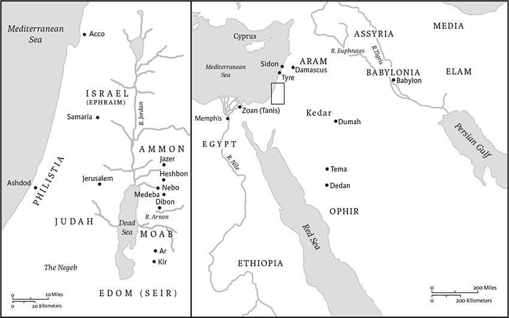

Isaiah
Name and Canonical Status
The book of Isaiah (Heb yeshaʿyah(u), “the Lord saves”) is named for the prophet Isaiah ben Amoz who lived during the latter half of the eighth century bce at the time of the Assyrian invasions of Israel and Judah. Isaiah is included among the Latter Prophets in the Tanakh and among the Prophets of the Old Testament in the Christian Bible. Jewish manuscripts and traditions frequently place Isaiah first because he lived before Jeremiah and Ezekiel, although the book sometimes appears after Jeremiah and Ezekiel because of its concern with comfort or restoration (b. B. Bat. 14b). In Christian Bibles, Isaiah is usually first among the Prophets because he lived before Jeremiah and Ezekiel. The Minor Prophets appear first in some manuscripts of the Greek Septuagint (LXX), however, probably because the prophet Hosea was thought to have lived before Isaiah.
Authorship, Composition, and Literary History
Traditional interpreters in both Judaism and Christianity attribute the book of Isaiah to the eighth-century bce prophet Isaiah, but interpreters as early as the Middle Ages observed that the second portion of the book, beginning in ch 40, presupposes the rise of King Cyrus of Persia (ruled 559–530; see 44.28; 45.1) and the conclusion of the Babylonian exile in 538. Modern scholars generally identify three major stages of composition in the book: (1) the works of Isaiah ben Amoz, which appear in chs 1–39; (2) the work of an anonymous prophet known as Second Isaiah from the conclusion of the Babylonian exile in chs 40–55; and (3) the work of Third Isaiah, a collection of materials from several prophets who wrote during the early Persian-period restoration of Jerusalem (late sixth through fifth or early fourth centuries bce) in chs 56–66. Some interpreters maintain that chs 56–66 should be included with Second Isaiah, and others maintain that chs 1–39 have been heavily edited in the seventh, sixth, and fifth centuries bce. Altogether, the book appears to have gone through at least four stages of composition: first, during the lifetime of Isaiah ben Amoz, who witnessed the period of the Assyrian invasions of Israel and Judah in 742–701 bce; second, during the late seventh-century bce restoration of King Josiah of Judah (640–609 bce), when Isaiah was edited to support the king's reforms; third, during the late sixth-century bce collapse of Babylon and the rise of King Cyrus of Persia, who authorized the return of exiled Jews to Jerusalem to rebuild the Temple; and fourth, during the late fifth and early fourth centuries bce when Nehemiah and Ezra attempted to consolidate the Jerusalem Temple's status as the holy center of Judaism in keeping with their understandings of the Torah and the Isaian tradition. The writers of each stage of Isaiah's composition edited and expanded the book in order to demonstrate that the prophet also addressed events of their own times. Whereas Isaiah ben Amoz spoke about divine judgment and restoration in his own day, each of the subsequent editions of the book presupposes that Isaiah's visions of restoration would be realized in their own time.
Historical Contexts
Four Pivotal Moments in the History of the Israelite People Form the Background to the Various Parts of Isaiah.
Contents and Structure
Although the book of Isaiah was composed in stages, the final form of Isaiah is designed to be read as a single work ascribed to the prophet Isaiah ben Amoz. Its different sections are unified partly by common themes, such as the Davidic/Zion tradition that presumes the ultimate rule over Jerusalem and the restored Israel by the house of David, under the sovereignty of the Lord. The various sections are also linked through common vocabulary, such as the divine title “the Holy One of Israel” (e.g., 1.4; 29.19; 40.25; 60.9). The literary structure of Isaiah consists of two major parts, both of which are concerned with reading Isaiah as a witness to Jerusalem as the seat of the Lord's sovereignty throughout all of creation. Chapters 1–33 address the period of punishment and anticipate the period of restoration through which the Lord's sovereignty will be recognized throughout the world, and chs 34–66 presuppose that the time of restoration and the recognition of the Lord's sovereignty are at hand. A more detailed outline of the formal literary structure of the book is as follows:
THE VISION OF ISAIAH BEN AMOZ: PROPHETIC EXHORTATION TO JERUSALEM AND JUDAH TO ADHERE TO THE LORD
Interpretation
The book of Isaiah serves as a theological reflection upon Jerusalem's experience of threat, exile, and restoration. It takes up fundamental questions of divine involvement in human history. To what extent is the Lord sovereign over Israel and Judah on the one hand, and the nations and all creation on the other? To what extent does the Lord bring both judgment and restoration to Jerusalem, Israel, and the world at large? To what extent is the Lord hidden in times of suffering and to what extent will the Lord deliberately bring suffering on one generation to achieve divine purpose in another? To what extent does the Lord's promise of security to Jerusalem/Zion and the royal house of David hold true? To what extent should human beings respond to the Lord's intervention in the human world with faithfulness? Such questions have occupied the readers of the book of Isaiah from ancient through modern times. Jewish interpreters have looked to Isaiah to understand the time when the Lord would restore Jerusalem, and Christian interpreters have looked to Isaiah to understand when the Lord would reveal the Messiah. Indeed, two major copies of the book of Isaiah and a number of shorter Isaian texts were found among the Dead Sea Scrolls at Qumran. The command “in the wilderness prepare the way of the Lord” (40.3) apparently motivated the Qumran sect to locate a major settlement in the wilderness of the Dead Sea to await the time that God would destroy the Romans and all others considered evil in the world. Citations from Isaiah play a major role in presenting the life and significance of Jesus in the New Testament, and readings from Isaiah play an especially important role in Jewish liturgy where Isaian texts are frequently read to complete and interpret the reading of the Torah.
Marvin A. Sweeney
1 The vision of Isaiah son of Amoz, which he saw concerning Judah and Jerusalem in the days of Uzziah, Jotham, Ahaz, and Hezekiah, kings of Judah.
2Hear, O heavens, and listen, O earth;
for the Lord has spoken:
I reared children and brought them up,
but they have rebelled against me.
3The ox knows its owner,
and the donkey its master's crib;
but Israel does not know,
my people do not understand.
4Ah, sinful nation,
people laden with iniquity,
offspring who do evil,
children who deal corruptly,
who have forsaken the Lord,
who have despised the Holy One of Israel,
who are utterly estranged!
5Why do you seek further beatings?
Why do you continue to rebel?
The whole head is sick,
and the whole heart faint.
6From the sole of the foot even to the head,
there is no soundness in it,
but bruises and sores
and bleeding wounds;
they have not been drained, or bound up,
or softened with oil.
7Your country lies desolate,
your cities are burned with fire;
in your very presence
aliens devour your land;
it is desolate, as overthrown by foreigners.
8And daughter Zion is left
like a booth in a vineyard,
like a shelter in a cucumber field,
like a besieged city.
9If the Lord of hosts
had not left us a few survivors,
we would have been like Sodom,
and become like Gomorrah.
10Hear the word of the Lord,
you rulers of Sodom!
Listen to the teaching of our God,
you people of Gomorrah!
11What to me is the multitude of your sacrifices?
says the Lord;
I have had enough of burnt offerings of rams
and the fat of fed beasts;
I do not delight in the blood of bulls,
or of lambs, or of goats.
12When you come to appear before me,a
who asked this from your hand?
Trample my courts no more;
13bringing offerings is futile;
incense is an abomination to me.
New moon and sabbath and calling of convocation—
I cannot endure solemn assemblies with iniquity.
14Your new moons and your appointed festivals
my soul hates;
they have become a burden to me,
I am weary of bearing them.
15When you stretch out your hands,
I will hide my eyes from you;
even though you make many prayers,
I will not listen;
your hands are full of blood.
16Wash yourselves; make yourselves clean;
remove the evil of your doings
from before my eyes;
cease to do evil,
17learn to do good;
seek justice,
rescue the oppressed,
defend the orphan,
plead for the widow.
18Come now, let us argue it out,
says the Lord:
though your sins are like scarlet,
they shall be like snow;
though they are red like crimson,
they shall become like wool.
19If you are willing and obedient,
you shall eat the good of the land;
20but if you refuse and rebel,
you shall be devoured by the sword;
for the mouth of the Lord has spoken.
21How the faithful city
has become a whore!
She that was full of justice,
righteousness lodged in her—
but now murderers!
22Your silver has become dross,
your wine is mixed with water.
23Your princes are rebels
and companions of thieves.
Everyone loves a bribe
and runs after gifts.
They do not defend the orphan,
and the widow's cause does not come before them.
24Therefore says the Sovereign, the Lord
of hosts, the Mighty One of Israel:
Ah, I will pour out my wrath on my enemies,
and avenge myself on my foes!
25I will turn my hand against you;
I will smelt away your dross as with lye
and remove all your alloy.
26And I will restore your judges as at the first,
and your counselors as at the beginning.
Afterward you shall be called the city of righteousness,
the faithful city.
27Zion shall be redeemed by justice,
and those in her who repent, by righteousness.
28But rebels and sinners shall be destroyed together,
and those who forsake the Lord shall be consumed.
29For you shall be ashamed of the oaks
in which you delighted;
and you shall blush for the gardens
that you have chosen.
30For you shall be like an oak
whose leaf withers,
and like a garden without water.
31The strong shall become like tinder,
and their worka like a spark;
they and their work shall burn together,
with no one to quench them.
2 The word that Isaiah son of Amoz saw concerning Judah and Jerusalem.
2In days to come
the mountain of the Lord's house
shall be established as the highest of the mountains,
and shall be raised above the hills;
all the nations shall stream to it.
3Many peoples shall come and say,
“Come, let us go up to the mountain of the Lord,
to the house of the God of Jacob;
that he may teach us his ways
and that we may walk in his paths.”
For out of Zion shall go forth instruction,
and the word of the Lord from Jerusalem.
4He shall judge between the nations,
and shall arbitrate for many peoples;
they shall beat their swords into plowshares,
and their spears into pruning hooks;
nation shall not lift up sword against nation,
neither shall they learn war any more.
5O house of Jacob,
come, let us walk
in the light of the Lord!
6For you have forsaken the ways of a your people,
O house of Jacob.
Indeed they are full of divinersb from the east
and of soothsayers like the Philistines,
and they clasp hands with foreigners.
7Their land is filled with silver and gold,
and there is no end to their treasures;
their land is filled with horses,
and there is no end to their chariots.
8Their land is filled with idols;
they bow down to the work of their hands,
to what their own fingers have made.
9And so people are humbled,
and everyone is brought low—
do not forgive them!
10Enter into the rock,
and hide in the dust
from the terror of the Lord,
and from the glory of his majesty.
11The haughty eyes of people shall be brought low,
and the pride of everyone shall be humbled;
and the Lord alone will be exalted on that day.
12For the Lord of hosts has a day
against all that is proud and lofty,
against all that is lifted up and high;c
13against all the cedars of Lebanon,
lofty and lifted up;
and against all the oaks of Bashan;
14against all the high mountains,
and against all the lofty hills;
15against every high tower,
and against every fortified wall;
16against all the ships of Tarshish,
and against all the beautiful craft.d
17The haughtiness of people shall be humbled,
and the pride of everyone shall be brought low;
and the Lord alone will be exalted on that day.
18The idols shall utterly pass away.
19Enter the caves of the rocks
and the holes of the ground,
from the terror of the Lord,
and from the glory of his majesty,
when he rises to terrify the earth.
20On that day people will throw away
to the moles and to the bats
their idols of silver and their idols of gold,
which they made for themselves to worship,
21to enter the caverns of the rocks
and the clefts in the crags,
from the terror of the Lord,
and from the glory of his majesty,
when he rises to terrify the earth.
22Turn away from mortals,
who have only breath in their nostrils,
for of what account are they?
3
For now the Sovereign, the Lord of hosts,
is taking away from Jerusalem and from Judah
support and staff—
all support of bread,
and all support of water—
2warrior and soldier,
judge and prophet,
diviner and elder,
3captain of fifty
and dignitary,
counselor and skillful magician
and expert enchanter.
4And I will make boys their princes,
and babes shall rule over them.
5The people will be oppressed,
everyone by another
and everyone by a neighbor;
the youth will be insolent to the elder,
and the base to the honorable.
6Someone will even seize a relative,
a member of the clan, saying,
“You have a cloak;
you shall be our leader,
and this heap of ruins
shall be under your rule.”
7But the other will cry out on that day, saying,
“I will not be a healer;
in my house there is neither bread nor cloak;
you shall not make me
leader of the people.”
8For Jerusalem has stumbled
and Judah has fallen,
because their speech and their deeds are against the Lord,
defying his glorious presence.
9The look on their faces bears witness against them;
they proclaim their sin like Sodom,
they do not hide it.
Woe to them!
For they have brought evil on themselves.
10Tell the innocent how fortunate they are,
for they shall eat the fruit of their labors.
11Woe to the guilty! How unfortunate they are,
for what their hands have done shall be done to them.
12My people—children are their oppressors,
and women rule over them.
O my people, your leaders mislead you,
and confuse the course of your paths.
13The Lord rises to argue his case;
he stands to judge the peoples.
14The Lord enters into judgment
with the elders and princes of his people:
It is you who have devoured the vineyard;
the spoil of the poor is in your houses.
15What do you mean by crushing my people,
by grinding the face of the poor? says the Lord God of hosts.
18In that day the Lord will take away the finery of the anklets, the headbands, and the crescents; 19the pendants, the bracelets, and the scarfs; 20the headdresses, the armlets, the sashes, the perfume boxes, and the amulets; 21the signet rings and nose rings; 22the festal robes, the mantles, the cloaks, and the handbags; 23the garments of gauze, the linen garments, the turbans, and the veils.
24Instead of perfume there will be a stench;
and instead of a sash, a rope;
and instead of well-set hair, baldness;
and instead of a rich robe, a binding of sackcloth;
instead of beauty, shame.a
25Your men shall fall by the sword
and your warriors in battle.
26And her gates shall lament and mourn;
ravaged, she shall sit upon the ground.
4 Seven women shall take hold of one man in that day, saying,
“We will eat our own bread and wear our own clothes;
just let us be called by your name;
take away our disgrace.”
2On that day the branch of the Lord shall be beautiful and glorious, and the fruit of the land shall be the pride and glory of the survivors of Israel. 3Whoever is left in Zion and remains in Jerusalem will be called holy, everyone who has been recorded for life in Jerusalem, 4once the Lord has washed away the filth of the daughters of Zion and cleansed the bloodstains of Jerusalem from its midst by a spirit of judgment and by a spirit of burning. 5Then the Lord will create over the whole site of Mount Zion and over its places of assembly a cloud by day and smoke and the shining of a flaming fire by night. Indeed over all the glory there will be a canopy. 6It will serve as a pavilion, a shade by day from the heat, and a refuge and a shelter from the storm and rain.
5
Let me sing for my beloved
my love-song concerning his vineyard:
My beloved had a vineyard
on a very fertile hill.
2He dug it and cleared it of stones,
and planted it with choice vines;
he built a watchtower in the midst of it,
and hewed out a wine vat in it;
he expected it to yield grapes,
but it yielded wild grapes.
3And now, inhabitants of Jerusalem
and people of Judah,
judge between me
and my vineyard.
4What more was there to do for my vineyard
that I have not done in it?
When I expected it to yield grapes,
why did it yield wild grapes?
5And now I will tell you
what I will do to my vineyard.
I will remove its hedge,
and it shall be devoured;
I will break down its wall,
and it shall be trampled down.
6I will make it a waste;
it shall not be pruned or hoed,
and it shall be overgrown with briers and thorns;
I will also command the clouds
that they rain no rain upon it.
7For the vineyard of the Lord of hosts
is the house of Israel,
and the people of Judah
are his pleasant planting;
he expected justice,
but saw bloodshed;
righteousness,
but heard a cry!
8Ah, you who join house to house,
who add field to field,
until there is room for no one but you,
and you are left to live alone
in the midst of the land!
9The Lord of hosts has sworn in my hearing:
Surely many houses shall be desolate,
large and beautiful houses, without inhabitant.
10For ten acres of vineyard shall yield but one bath,
and a homer of seed shall yield a mere ephah.a
11Ah, you who rise early in the morning
in pursuit of strong drink,
who linger in the evening
to be inflamed by wine,
12whose feasts consist of lyre and harp,
tambourine and flute and wine,
but who do not regard the deeds of the Lord,
or see the work of his hands!
13Therefore my people go into exile without knowledge;
their nobles are dying of hunger,
and their multitude is parched with thirst.
14Therefore Sheol has enlarged its appetite
and opened its mouth beyond measure;
the nobility of Jerusalema and her multitude go down,
her throng and all who exult in her.
15People are bowed down, everyone is brought low,
and the eyes of the haughty are humbled.
16But the Lord of hosts is exalted by justice,
and the Holy God shows himself holy by righteousness.
17Then the lambs shall graze as in their pasture,
fatlings and kidsb shall feed among the ruins.
18Ah, you who drag iniquity along with cords of falsehood,
who drag sin along as with cart ropes,
19who say, “Let him make haste,
let him speed his work
that we may see it;
let the plan of the Holy One of Israel hasten to fulfillment,
that we may know it!”
20Ah, you who call evil good
and good evil,
who put darkness for light
and light for darkness,
who put bitter for sweet
and sweet for bitter!
21Ah, you who are wise in your own eyes,
and shrewd in your own sight!
22Ah, you who are heroes in drinking wine
and valiant at mixing drink,
23who acquit the guilty for a bribe,
and deprive the innocent of their rights!
24Therefore, as the tongue of fire devours the stubble,
and as dry grass sinks down in the flame,
so their root will become rotten,
and their blossom go up like dust;
for they have rejected the instruction of the Lord of hosts,
and have despised the word of the Holy One of Israel.
25Therefore the anger of the Lord was
kindled against his people,
and he stretched out his hand against them and struck them;
the mountains quaked,
and their corpses were like refuse
in the streets.
For all this his anger has not turned away,
and his hand is stretched out still.
26He will raise a signal for a nation far away,
and whistle for a people at the ends of the earth;
Here they come, swiftly, speedily!
27None of them is weary, none stumbles,
none slumbers or sleeps,
not a loincloth is loose,
not a sandal-thong broken;
28their arrows are sharp,
all their bows bent,
their horses’ hoofs seem like flint,
and their wheels like the whirlwind.
29Their roaring is like a lion,
like young lions they roar;
they growl and seize their prey,
they carry it off, and no one can rescue.
30They will roar over it on that day,
like the roaring of the sea.
And if one look to the land—
only darkness and distress;
and the light grows dark with clouds.
6 In the year that King Uzziah died, I saw the Lord sitting on a throne, high and lofty; and the hem of his robe filled the temple. 2Seraphs were in attendance above him; each had six wings: with two they covered their faces, and with two they covered their feet, and with two they flew. 3And one called to another and said:
“Holy, holy, holy is the Lord of hosts;
the whole earth is full of his glory.”
4The pivotsa on the thresholds shook at the voices of those who called, and the house filled with smoke. 5And I said: “Woe is me! I am lost, for I am a man of unclean lips, and I live among a people of unclean lips; yet my eyes have seen the King, the Lord of hosts!”
6Then one of the seraphs flew to me, holding a live coal that had been taken from the altar with a pair of tongs. 7The seraphb touched my mouth with it and said: “Now that this has touched your lips, your guilt has departed and your sin is blotted out.” 8Then I heard the voice of the Lord saying, “Whom shall I send, and who will go for us?” And I said, “Here am I; send me!” 9And he said, “Go and say to this people:
‘Keep listening, but do not comprehend;
keep looking, but do not understand.’
10Make the mind of this people dull,
and stop their ears,
and shut their eyes,
so that they may not look with their eyes,
and listen with their ears,
and comprehend with their minds,
and turn and be healed.”
11Then I said, “How long, O Lord?” And he said:
“Until cities lie waste
without inhabitant,
and houses without people,
and the land is utterly desolate;
12until the Lord sends everyone far away,
and vast is the emptiness in the midst of the land.
13Even if a tenth part remain in it,
it will be burned again,
like a terebinth or an oak
whose stump remains standing
when it is felled.”a
The holy seed is its stump.
7 In the days of Ahaz son of Jotham son of Uzziah, king of Judah, King Rezin of Aram and King Pekah son of Remaliah of Israel went up to attack Jerusalem, but could not mount an attack against it. 2When the house of David heard that Aram had allied itself with Ephraim, the heart of Ahazb and the heart of his people shook as the trees of the forest shake before the wind.
3Then the Lord said to Isaiah, Go out to meet Ahaz, you and your son Shear-jashub,a at the end of the conduit of the upper pool on the highway to the Fuller's Field, 4and say to him, Take heed, be quiet, do not fear, and do not let your heart be faint because of these two smoldering stumps of firebrands, because of the fierce anger of Rezin and Aram and the son of Remaliah. 5Because Aram—with Ephraim and the son of Remaliah—has plotted evil against you, saying, 6Let us go up against Judah and cut off Jerusalemb and conquer it for ourselves and make the son of Tabeel king in it; 7therefore thus says the Lord God:
It shall not stand,
and it shall not come to pass.
8For the head of Aram is Damascus,
and the head of Damascus is Rezin.
(Within sixty-five years Ephraim will be shattered, no longer a people.)
9The head of Ephraim is Samaria,
and the head of Samaria is the son of Remaliah.
If you do not stand firm in faith,
you shall not stand at all.
10Again the Lord spoke to Ahaz, saying, 11Ask a sign of the Lord your God; let it be deep as Sheol or high as heaven. 12But Ahaz said, I will not ask, and I will not put the Lord to the test. 13Then Isaiahc said: “Hear then, O house of David! Is it too little for you to weary mortals, that you weary my God also? 14Therefore the Lord himself will give you a sign. Look, the young womand is with child and shall bear a son, and shall name him Immanuel.e 15He shall eat curds and honey by the time he knows how to refuse the evil and choose the good. 16For before the child knows how to refuse the evil and choose the good, the land before whose two kings you are in dread will be deserted. 17The Lord will bring on you and on your people and on your ancestral house such days as have not come since the day that Ephraim departed from Judah—the king of Assyria.”
18On that day the Lord will whistle for the fly that is at the sources of the streams of Egypt, and for the bee that is in the land of Assyria. 19And they will all come and settle in the steep ravines, and in the clefts of the rocks, and on all the thornbushes, and on all the pastures.
20On that day the Lord will shave with a razor hired beyond the River—with the king of Assyria—the head and the hair of the feet, and it will take off the beard as well.
21On that day one will keep alive a young cow and two sheep, 22and will eat curds because of the abundance of milk that they give; for everyone that is left in the land shall eat curds and honey.
23On that day every place where there used to be a thousand vines, worth a thousand shekels of silver, will become briers and thorns. 24With bow and arrows one will go there, for all the land will be briers and thorns; 25and as for all the hills that used to be hoed with a hoe, you will not go there for fear of briers and thorns; but they will become a place where cattle are let loose and where sheep tread.
8 Then the Lord said to me, Take a large tablet and write on it in common characters, “Belonging to Maher-shalalhash-baz,”a 2and have it attestedb for me by reliable witnesses, the priest Uriah and Zechariah son of Jeberechiah. 3And I went to the prophetess, and she conceived and bore a son. Then the Lord said to me, Name him Maher-shalal-hash-baz; 4for before the child knows how to call “My father” or “My mother,” the wealth of Damascus and the spoil of Samaria will be carried away by the king of Assyria.
5The Lord spoke to me again: 6Because this people has refused the waters of Shiloah that flow gently, and melt in fear beforec Rezin and the son of Remaliah; 7therefore, the Lord is bringing up against it the mighty flood waters of the River, the king of Assyria and all his glory; it will rise above all its channels and overflow all its banks; 8it will sweep on into Judah as a flood, and, pouring over, it will reach up to the neck; and its outspread wings will fill the breadth of your land, O Immanuel.
11For the Lord spoke thus to me while his hand was strong upon me, and warned me not to walk in the way of this people, saying: 12Do not call conspiracy all that this people calls conspiracy, and do not fear what it fears, or be in dread. 13But the Lord of hosts, him you shall regard as holy; let him be your fear, and let him be your dread. 14He will become a sanctuary, a stone one strikes against; for both houses of Israel he will become a rock one stumbles over—a trap and a snare for the inhabitants of Jerusalem. 15And many among them shall stumble; they shall fall and be broken; they shall be snared and taken.
16Bind up the testimony, seal the teaching among my disciples. 17I will wait for the Lord, who is hiding his face from the house of Jacob, and I will hope in him. 18See, I and the children whom the Lord has given me are signs and portents in Israel from the Lord of hosts, who dwells on Mount Zion. 19Now if people say to you, “Consult the ghosts and the familiar spirits that chirp and mutter; should not a people consult their gods, the dead on behalf of the living, 20for teaching and for instruction?” surely, those who speak like this will have no dawn! 21They will pass through the land,b greatly distressed and hungry; when they are hungry, they will be enraged and will cursec their king and their gods. They will turn their faces upward, 22or they will look to the earth, but will see only distress and darkness, the gloom of anguish; and they will be thrust into thick darkness.d
9e But there will be no gloom for those who were in anguish. In the former time he brought into contempt the land of Zebulun and the land of Naphtali, but in the latter time he will make glorious the way of the sea, the land beyond the Jordan, Galilee of the nations.
2fThe people who walked in darkness
have seen a great light;
those who lived in a land of deep darkness—
on them light has shined.
3You have multiplied the nation,
you have increased its joy;
they rejoice before you
as with joy at the harvest,
as people exult when dividing plunder.
4For the yoke of their burden,
and the bar across their shoulders,
the rod of their oppressor,
you have broken as on the day of Midian.
5For all the boots of the tramping warriors
and all the garments rolled in blood
shall be burned as fuel for the fire.
6For a child has been born for us,
a son given to us;
authority rests upon his shoulders;
and he is named
Wonderful Counselor, Mighty God,
Everlasting Father, Prince of Peace.
7His authority shall grow continually,
and there shall be endless peace
for the throne of David and his kingdom.
He will establish and uphold it
with justice and with righteousness
from this time onward and forevermore.
The zeal of the Lord of hosts will do this.
8The Lord sent a word against Jacob,
and it fell on Israel;
9and all the people knew it—
Ephraim and the inhabitants of Samaria—
but in pride and arrogance of heart they said:
10“The bricks have fallen,
but we will build with dressed stones;
the sycamores have been cut down,
but we will put cedars in their place.”
11So the Lord raised adversariesa against them,
and stirred up their enemies,
12the Arameans on the east and the Philistines on the west,
and they devoured Israel with open mouth.
For all this his anger has not turned away;
his hand is stretched out still.
13The people did not turn to him who struck them,
or seek the Lord of hosts.
14So the Lord cut off from Israel head and tail,
palm branch and reed in one day—
15elders and dignitaries are the head,
and prophets who teach lies are the tail;
16for those who led this people led them astray,
and those who were led by them were left in confusion.
17That is why the Lord did not have pity ona their young people,
or compassion on their orphans and widows;
for everyone was godless and an evildoer,
and every mouth spoke folly.
For all this his anger has not turned away;
his hand is stretched out still.
18For wickedness burned like a fire,
consuming briers and thorns;
it kindled the thickets of the forest,
and they swirled upward in a column of smoke.
19Through the wrath of the Lord of hosts
the land was burned,
and the people became like fuel for the fire;
no one spared another.
20They gorged on the right, but still were hungry,
and they devoured on the left, but were not satisfied;
they devoured the flesh of their own kindred;b
21Manasseh devoured Ephraim, and Ephraim Manasseh,
and together they were against Judah.
For all this his anger has not turned away;
his hand is stretched out still.
10
Ah, you who make iniquitous decrees,
who write oppressive statutes,
2to turn aside the needy from justice
and to rob the poor of my people of their right,
that widows may be your spoil,
and that you may make the orphans your prey!
3What will you do on the day of punishment,
in the calamity that will come from far away?
To whom will you flee for help,
and where will you leave your wealth,
4so as not to crouch among the prisoners
or fall among the slain?
For all this his anger has not turned away;
his hand is stretched out still.
5Ah, Assyria, the rod of my anger—
the club in their hands is my fury!
6Against a godless nation I send him,
and against the people of my wrath I command him,
to take spoil and seize plunder,
and to tread them down like the mire of the streets.
7But this is not what he intends,
nor does he have this in mind;
but it is in his heart to destroy,
and to cut off nations not a few.
8For he says:
“Are not my commanders all kings?
9Is not Calno like Carchemish?
Is not Hamath like Arpad?
Is not Samaria like Damascus?
10As my hand has reached to the kingdoms of the idols
whose images were greater than those of Jerusalem and Samaria,
11shall I not do to Jerusalem and her idols
what I have done to Samaria and her images?”
12When the Lord has finished all his work on Mount Zion and on Jerusalem, hea will punish the arrogant boasting of the king of Assyria and his haughty pride. 13For he says:
“By the strength of my hand I have done it,
and by my wisdom, for I have understanding;
I have removed the boundaries of peoples,
and have plundered their treasures;
like a bull I have brought down those who sat on thrones.
14My hand has found, like a nest,
the wealth of the peoples;
and as one gathers eggs that have been forsaken,
so I have gathered all the earth;
and there was none that moved a wing,
or opened its mouth, or chirped.”
15Shall the ax vaunt itself over the one who wields it,
or the saw magnify itself against the one who handles it?
As if a rod should raise the one who lifts it up,
or as if a staff should lift the one who is not wood!
16Therefore the Sovereign, the Lord of hosts,
will send wasting sickness among his stout warriors,
and under his glory a burning will be kindled,
like the burning of fire.
17The light of Israel will become a fire,
and his Holy One a flame;
and it will burn and devour
his thorns and briers in one day.
18The glory of his forest and his fruitful land
the Lord will destroy, both soul and body,
and it will be as when an invalid wastes away.
19The remnant of the trees of his forest will be so few
that a child can write them down.
20On that day the remnant of Israel and the survivors of the house of Jacob will no more lean on the one who struck them, but will lean on the Lord, the Holy One of Israel, in truth. 21A remnant will return, the remnant of Jacob, to the mighty God. 22For though your people Israel were like the sand of the sea, only a remnant of them will return. Destruction is decreed, overflowing with righteousness. 23For the Lord God of hosts will make a full end, as decreed, in all the earth.b
24Therefore thus says the Lord God of hosts: O my people, who live in Zion, do not be afraid of the Assyrians when they beat you with a rod and lift up their staff against you as the Egyptians did. 25For in a very little while my indignation will come to an end, and my anger will be directed to their destruction. 26The Lord of hosts will wield a whip against them, as when he struck Midian at the rock of Oreb; his staff will be over the sea, and he will lift it as he did in Egypt. 27On that day his burden will be removed from your shoulder, and his yoke will be destroyed from your neck.
He has gone up from Rimmon,a
28he has come to Aiath;
he has passed through Migron,
at Michmash he stores his baggage;
29they have crossed over the pass,
at Geba they lodge for the night;
Ramah trembles,
Gibeah of Saul has fled.
30Cry aloud, O daughter Gallim!
Listen, O Laishah!
Answer her, O Anathoth!
31Madmenah is in flight,
the inhabitants of Gebim flee for safety.
32This very day he will halt at Nob,
he will shake his fist
at the mount of daughter Zion,
the hill of Jerusalem.
11
A shoot shall come out from the stump of Jesse,
and a branch shall grow out of his roots.
2The spirit of the Lord shall rest on him,
the spirit of wisdom and understanding,
the spirit of counsel and might,
the spirit of knowledge and the fear of the Lord.
3His delight shall be in the fear of the Lord.
He shall not judge by what his eyes see,
or decide by what his ears hear;
4but with righteousness he shall judge the poor,
and decide with equity for the meek of the earth;
he shall strike the earth with the rod of his mouth,
and with the breath of his lips he shall kill the wicked.
5Righteousness shall be the belt around his waist,
and faithfulness the belt around his loins.
6The wolf shall live with the lamb,
the leopard shall lie down with the kid,
the calf and the lion and the fatling together,
and a little child shall lead them.
7The cow and the bear shall graze,
their young shall lie down together;
and the lion shall eat straw like the ox.
8The nursing child shall play over the hole of the asp,
and the weaned child shall put its hand on the adder's den.
9They will not hurt or destroy
on all my holy mountain;
for the earth will be full of the knowledge of the Lord
as the waters cover the sea.
10On that day the root of Jesse shall stand as a signal to the peoples; the nations shall inquire of him, and his dwelling shall be glorious.
11On that day the Lord will extend his hand yet a second time to recover the remnant that is left of his people, from Assyria, from Egypt, from Pathros, from Ethiopia,a from Elam, from Shinar, from Hamath, and from the coastlands of the sea.
12He will raise a signal for the nations,
and will assemble the outcasts of Israel,
and gather the dispersed of Judah
from the four corners of the earth.
13The jealousy of Ephraim shall depart,
the hostility of Judah shall be cut off;
Ephraim shall not be jealous of Judah,
and Judah shall not be hostile towards Ephraim.
14But they shall swoop down on the backs of the Philistines in the west,
together they shall plunder the people of the east.
They shall put forth their hand against Edom and Moab,
and the Ammonites shall obey them.
15And the Lord will utterly destroy
the tongue of the sea of Egypt;
and will wave his hand over the River
with his scorching wind;
and will split it into seven channels,
and make a way to cross on foot;
16so there shall be a highway from Assyria
for the remnant that is left of his people,
as there was for Israel
when they came up from the land of Egypt.
12 You will say in that day:
I will give thanks to you, O Lord,
for though you were angry with me,
your anger turned away,
and you comforted me.
3With joy you will draw water from the wells of salvation. 4And you will say in that day:
Give thanks to the Lord,
call on his name;
make known his deeds among the nations;
proclaim that his name is exalted.

Places mentioned in the oracles against foreign nations (Isa 13–23)
13 The oracle concerning Babylon that Isaiah son of Amoz saw.
2On a bare hill raise a signal,
cry aloud to them;
wave the hand for them to enter
the gates of the nobles.
3I myself have commanded my consecrated ones,
have summoned my warriors, my proudly exulting ones,
to execute my anger.
4Listen, a tumult on the mountains
as of a great multitude!
Listen, an uproar of kingdoms,
of nations gathering together!
The Lord of hosts is mustering
an army for battle.
5They come from a distant land,
from the end of the heavens,
the Lord and the weapons of his indignation,
to destroy the whole earth.
6Wail, for the day of the Lord is near;
it will come like destruction from the Almighty!a
7Therefore all hands will be feeble,
and every human heart will melt,
8and they will be dismayed.
Pangs and agony will seize them;
they will be in anguish like a woman in labor.
They will look aghast at one another;
their faces will be aflame.
9See, the day of the Lord comes,
cruel, with wrath and fierce anger,
to make the earth a desolation,
and to destroy its sinners from it.
10For the stars of the heavens and their constellations
will not give their light;
the sun will be dark at its rising,
and the moon will not shed its light.
11I will punish the world for its evil,
and the wicked for their iniquity;
I will put an end to the pride of the arrogant,
and lay low the insolence of tyrants.
12I will make mortals more rare than fine gold,
and humans than the gold of Ophir.
13Therefore I will make the heavens tremble,
and the earth will be shaken out of its place,
at the wrath of the Lord of hosts
in the day of his fierce anger.
14Like a hunted gazelle,
or like sheep with no one to gather them,
all will turn to their own people,
and all will flee to their own lands.
15Whoever is found will be thrust through,
and whoever is caught will fall by the sword.
16Their infants will be dashed to pieces
before their eyes;
their houses will be plundered,
and their wives ravished.
17See, I am stirring up the Medes against them,
who have no regard for silver
and do not delight in gold.
18Their bows will slaughter the young men;
they will have no mercy on the fruit of the womb;
their eyes will not pity children.
19And Babylon, the glory of kingdoms,
the splendor and pride of the Chaldeans,
will be like Sodom and Gomorrah
when God overthrew them.
20It will never be inhabited
or lived in for all generations;
Arabs will not pitch their tents there,
shepherds will not make their flocks lie down there.
21But wild animals will lie down there,
and its houses will be full of howling creatures;
there ostriches will live,
and there goat-demons will dance.
22Hyenas will cry in its towers,
and jackals in the pleasant palaces;
its time is close at hand,
and its days will not be prolonged.
14 But the Lord will have compassion on Jacob and will again choose Israel, and will set them in their own land; and aliens will join them and attach themselves to the house of Jacob. 2And the nations will take them and bring them to their place, and the house of Israel will possess the nationsa as male and female slaves in the Lord's land; they will take captive those who were their captors, and rule over those who oppressed them.
3When the Lord has given you rest from your pain and turmoil and the hard service with which you were made to serve, 4you will take up this taunt against the king of Babylon:
How the oppressor has ceased!
How his insolenceb has ceased!
5The Lord has broken the staff of the wicked,
the scepter of rulers,
6that struck down the peoples in wrath
with unceasing blows,
that ruled the nations in anger
with unrelenting persecution.
7The whole earth is at rest and quiet;
they break forth into singing.
8The cypresses exult over you,
the cedars of Lebanon, saying,
“Since you were laid low,
no one comes to cut us down.”
9Sheol beneath is stirred up
to meet you when you come;
it rouses the shades to greet you,
all who were leaders of the earth;
it raises from their thrones
all who were kings of the nations.
10All of them will speak
and say to you:
“You too have become as weak as we!
You have become like us!”
11Your pomp is brought down to Sheol,
and the sound of your harps;
maggots are the bed beneath you,
and worms are your covering.
12How you are fallen from heaven,
O Day Star, son of Dawn!
How you are cut down to the ground,
you who laid the nations low!
13You said in your heart,
“I will ascend to heaven;
I will raise my throne
above the stars of God;
I will sit on the mount of assembly
on the heights of Zaphon;c
14I will ascend to the tops of the clouds,
I will make myself like the Most High.”
15But you are brought down to Sheol,
to the depths of the Pit.
16Those who see you will stare at you,
and ponder over you:
“Is this the man who made the earth tremble,
who shook kingdoms,
17who made the world like a desert
and overthrew its cities,
who would not let his prisoners go home?”
18All the kings of the nations lie in glory,
each in his own tomb;
19but you are cast out, away from your grave,
like loathsome carrion,a
clothed with the dead, those pierced by the sword,
who go down to the stones of the Pit,
like a corpse trampled underfoot.
20You will not be joined with them in burial,
because you have destroyed your land,
you have killed your people.
22I will rise up against them, says the Lord of hosts, and will cut off from Babylon name and remnant, offspring and posterity, says the Lord. 23And I will make it a possession of the hedgehog, and pools of water, and I will sweep it with the broom of destruction, says the Lord of hosts.
24The Lord of hosts has sworn:
As I have designed,
so shall it be;
and as I have planned,
so shall it come to pass:
25I will break the Assyrian in my land,
and on my mountains trample him under foot;
his yoke shall be removed from them,
and his burden from their shoulders.
26This is the plan that is planned
concerning the whole earth;
and this is the hand that is stretched out
over all the nations.
27For the Lord of hosts has planned,
and who will annul it?
His hand is stretched out,
and who will turn it back?
28In the year that King Ahaz died this oracle came:
29Do not rejoice, all you Philistines,
that the rod that struck you is broken,
for from the root of the snake will come forth an adder,
and its fruit will be a flying fiery serpent.
30The firstborn of the poor will graze,
and the needy lie down in safety;
but I will make your root die of famine,
and your remnant Ia will kill.
31Wail, O gate; cry, O city;
melt in fear, O Philistia, all of you!
For smoke comes out of the north,
and there is no straggler in its ranks.
32What will one answer the messengers of the nation?
“The Lord has founded Zion,
and the needy among his people
will find refuge in her.”
15
An oracle concerning Moab.
Because Ar is laid waste in a night,
Moab is undone;
because Kir is laid waste in a night,
Moab is undone.
2Dibonb has gone up to the temple,
to the high places to weep;
over Nebo and over Medeba
Moab wails.
On every head is baldness,
every beard is shorn;
3in the streets they bind on sackcloth;
on the housetops and in the squares
everyone wails and melts in tears.
4Heshbon and Elealeh cry out,
their voices are heard as far as Jahaz;
therefore the loins of Moab quiver;c
his soul trembles.
5My heart cries out for Moab;
his fugitives flee to Zoar,
to Eglath-shelishiyah.
For at the ascent of Luhith
they go up weeping;
on the road to Horonaim
they raise a cry of destruction;
6the waters of Nimrim
are a desolation;
the grass is withered, the new growth fails,
the verdure is no more.
7Therefore the abundance they have gained
and what they have laid up
they carry away
over the Wadi of the Willows.
8For a cry has gone
around the land of Moab;
the wailing reaches to Eglaim,
the wailing reaches to Beer-elim.
9For the waters of Dibond are full of blood;
yet I will bring upon Dibond even more—
a lion for those of Moab who escape,
for the remnant of the land.
16
Send lambs
to the ruler of the land,
from Sela, by way of the desert,
to the mount of daughter Zion.
2Like fluttering birds,
like scattered nestlings,
so are the daughters of Moab
at the fords of the Arnon.
3“Give counsel,
grant justice;
make your shade like night
at the height of noon;
hide the outcasts,
do not betray the fugitive;
4let the outcasts of Moab
settle among you;
be a refuge to them
from the destroyer.”
When the oppressor is no more,
and destruction has ceased,
and marauders have vanished from the land,
5then a throne shall be established in steadfast love
in the tent of David,
and on it shall sit in faithfulness
a ruler who seeks justice
and is swift to do what is right.
6We have heard of the pride of Moab
—how proud he is!—
of his arrogance, his pride, and his insolence;
his boasts are false.
7Therefore let Moab wail,
let everyone wail for Moab.
Mourn, utterly stricken,
for the raisin cakes of Kir-hareseth.
8For the fields of Heshbon languish,
and the vines of Sibmah,
whose clusters once made drunk
the lords of the nations,
reached to Jazer
and strayed to the desert;
their shoots once spread abroad
and crossed over the sea.
9Therefore I weep with the weeping of Jazer
for the vines of Sibmah;
I drench you with my tears,
O Heshbon and Elealeh;
for the shout over your fruit harvest
and your grain harvest has ceased.
10Joy and gladness are taken away
from the fruitful field;
and in the vineyards no songs are sung,
no shouts are raised;
no treader treads out wine in the presses;
the vintage-shout is hushed.a
11Therefore my heart throbs like a harp for Moab,
and my very soul for Kir-heres.
12When Moab presents himself, when he wearies himself upon the high place, when he comes to his sanctuary to pray, he will not prevail.
13This was the word that the Lord spoke concerning Moab in the past. 14But now the Lord says, In three years, like the years of a hired worker, the glory of Moab will be brought into contempt, in spite of all its great multitude; and those who survive will be very few and feeble.
17
An oracle concerning Damascus.
See, Damascus will cease to be a city,
and will become a heap of ruins.
2Her towns will be deserted forever;a
they will be places for flocks,
which will lie down, and no one will make them afraid.
3The fortress will disappear from Ephraim,
and the kingdom from Damascus;
and the remnant of Aram will be
like the glory of the children of Israel, says the Lord of hosts.
4On that day
the glory of Jacob will be brought low,
and the fat of his flesh will grow lean.
5And it shall be as when reapers gather standing grain
and their arms harvest the ears,
and as when one gleans the ears of grain
in the Valley of Rephaim.
6Gleanings will be left in it,
as when an olive tree is beaten—
two or three berries
in the top of the highest bough,
four or five
on the branches of a fruit tree, says
the Lord God of Israel.
7On that day people will regard their Maker, and their eyes will look to the Holy One of Israel; 8they will not have regard for the altars, the work of their hands, and they will not look to what their own fingers have made, either the sacred polesb or the altars of incense.
9On that day their strong cities will be like the deserted places of the Hivites and the Amorites,c which they deserted because of the children of Israel, and there will be desolation.
10For you have forgotten the God of your salvation,
and have not remembered the Rock of your refuge;
therefore, though you plant pleasant plants
and set out slips of an alien god,
11though you make them grow on the day that you plant them,
and make them blossom in the morning that you sow;
yet the harvest will flee away
in a day of grief and incurable pain.
12Ah, the thunder of many peoples,
they thunder like the thundering of the sea!
Ah, the roar of nations,
they roar like the roaring of mighty waters!
13The nations roar like the roaring of many waters,
but he will rebuke them, and they will flee far away,
chased like chaff on the mountains before the wind
and whirling dust before the storm.
14At evening time, lo, terror!
Before morning, they are no more.
This is the fate of those who despoil us,
and the lot of those who plunder us.
18
Ah, land of whirring wings
beyond the rivers of Ethiopia,d
2sending ambassadors by the Nile
in vessels of papyrus on the waters!
Go, you swift messengers,
to a nation tall and smooth,
to a people feared near and far,
a nation mighty and conquering,
whose land the rivers divide.
3All you inhabitants of the world,
you who live on the earth,
when a signal is raised on the mountains, look!
When a trumpet is blown, listen!
4For thus the Lord said to me:
I will quietly look from my dwelling
like clear heat in sunshine,
like a cloud of dew in the heat of harvest.
5For before the harvest, when the blossom is over
and the flower becomes a ripening grape,
he will cut off the shoots with pruning hooks,
and the spreading branches he will hew away.
6They shall all be left
to the birds of prey of the mountains
and to the animals of the earth.
And the birds of prey will summer on them,
and all the animals of the earth will winter on them.
7At that time gifts will be brought to the Lord of hosts froma a people tall and smooth, from a people feared near and far, a nation mighty and conquering, whose land the rivers divide, to Mount Zion, the place of the name of the Lord of hosts.
19
An oracle concerning Egypt.
See, the Lord is riding on a swift cloud and comes to Egypt;
the idols of Egypt will tremble at his presence,
and the heart of the Egyptians will melt within them.
2I will stir up Egyptians against Egyptians,
and they will fight, one against the other,
neighbor against neighbor,
city against city, kingdom against kingdom;
3the spirit of the Egyptians within them will be emptied out,
and I will confound their plans;
they will consult the idols and the spirits of the dead
and the ghosts and the familiar spirits;
4I will deliver the Egyptians
into the hand of a hard master;
a fierce king will rule over them,
says the Sovereign, the Lord of hosts.
5The waters of the Nile will be dried up,
and the river will be parched and dry;
6its canals will become foul,
and the branches of Egypt's Nile will diminish and dry up,
reeds and rushes will rot away.
7There will be bare places by the Nile,
on the brink of the Nile;
and all that is sown by the Nile will dry up,
be driven away, and be no more.
8Those who fish will mourn;
all who cast hooks in the Nile will lament,
and those who spread nets on the water will languish.
9The workers in flax will be in despair,
and the carders and those at the loom will grow pale.
10Its weavers will be dismayed,
and all who work for wages will be grieved.
11The princes of Zoan are utterly foolish;
the wise counselors of Pharaoh give stupid counsel.
How can you say to Pharaoh,
“I am one of the sages,
a descendant of ancient kings”?
12Where now are your sages?
Let them tell you and make known
what the Lord of hosts has planned against Egypt.
13The princes of Zoan have become fools,
and the princes of Memphis are deluded;
those who are the cornerstones of its tribes
have led Egypt astray.
14The Lord has poured into thema
a spirit of confusion;
and they have made Egypt stagger in all its doings
as a drunkard staggers around in vomit.
15Neither head nor tail, palm branch or reed,
will be able to do anything for Egypt.
16On that day the Egyptians will be like women, and tremble with fear before the hand that the Lord of hosts raises against them. 17And the land of Judah will become a terror to the Egyptians; everyone to whom it is mentioned will fear because of the plan that the Lord of hosts is planning against them.
18On that day there will be five cities in the land of Egypt that speak the language of Canaan and swear allegiance to the Lord of hosts. One of these will be called the City of the Sun.
19On that day there will be an altar to the Lord in the center of the land of Egypt, and a pillar to the Lord at its border. 20It will be a sign and a witness to the Lord of hosts in the land of Egypt; when they cry to the Lord because of oppressors, he will send them a savior, and will defend and deliver them. 21The Lord will make himself known to the Egyptians; and the Egyptians will know the Lord on that day, and will worship with sacrifice and burnt offering, and they will make vows to the Lord and perform them. 22The Lord will strike Egypt, striking and healing; they will return to the Lord, and he will listen to their supplications and heal them.
23On that day there will be a highway from Egypt to Assyria, and the Assyrian will come into Egypt, and the Egyptian into Assyria, and the Egyptians will worship with the Assyrians.
24On that day Israel will be the third with Egypt and Assyria, a blessing in the midst of the earth, 25whom the Lord of hosts has blessed, saying, “Blessed be Egypt my people, and Assyria the work of my hands, and Israel my heritage.”
20 In the year that the commander-inchief, who was sent by King Sargon of Assyria, came to Ashdod and fought against it and took it— 2at that time the Lord had spoken to Isaiah son of Amoz, saying, “Go, and loose the sackcloth from your loins and take your sandals off your feet,” and he had done so, walking naked and barefoot. 3Then the Lord said, “Just as my servant Isaiah has walked naked and barefoot for three years as a sign and a portent against Egypt and Ethiopia,a 4so shall the king of Assyria lead away the Egyptians as captives and the Ethiopiansb as exiles, both the young and the old, naked and barefoot, with buttocks uncovered, to the shame of Egypt. 5And they shall be dismayed and confounded because of Ethiopiaa their hope and of Egypt their boast. 6In that day the inhabitants of this coastland will say, ‘See, this is what has happened to those in whom we hoped and to whom we fled for help and deliverance from the king of Assyria! And we, how shall we escape?’”
21 The oracle concerning the wilderness of the sea.
As whirlwinds in the Negeb sweep on,
it comes from the desert,
from a terrible land.
2A stern vision is told to me;
the betrayer betrays,
and the destroyer destroys.
Go up, O Elam,
lay siege, O Media;
all the sighing she has caused
I bring to an end.
3Therefore my loins are filled with anguish;
pangs have seized me,
like the pangs of a woman in labor;
I am bowed down so that I cannot hear,
I am dismayed so that I cannot see.
4My mind reels, horror has appalled me;
the twilight I longed for
has been turned for me into trembling.
5They prepare the table,
they spread the rugs,
they eat, they drink.
Rise up, commanders,
oil the shield!
6For thus the Lord said to me:
“Go, post a lookout,
let him announce what he sees.
7When he sees riders, horsemen in pairs,
riders on donkeys, riders on camels,
let him listen diligently,
very diligently.”
8Then the watcherc called out:
“Upon a watchtower I stand, O Lord,
continually by day,
and at my post I am stationed
throughout the night.
9Look, there they come, riders,
horsemen in pairs!”
Then he responded,
“Fallen, fallen is Babylon;
and all the images of her gods
lie shattered on the ground.”
10O my threshed and winnowed one,
what I have heard from the Lord of hosts,
the God of Israel, I announce to you.
11The oracle concerning Dumah.
One is calling to me from Seir,
“Sentinel, what of the night?
Sentinel, what of the night?”
12The sentinel says:
“Morning comes, and also the night.
If you will inquire, inquire;
come back again.”
13The oracle concerning the desert plain.
16For thus the Lord said to me: Within a year, according to the years of a hired worker, all the glory of Kedar will come to an end; 17and the remaining bows of Kedar's warriors will be few; for the Lord, the God of Israel, has spoken.
22 The oracle concerning the valley of vision.
What do you mean that you have gone up,
all of you, to the housetops,
2you that are full of shoutings,
tumultuous city, exultant town?
Your slain are not slain by the sword,
nor are they dead in battle.
3Your rulers have all fled together;
they were captured without the use of a bow.a
All of you who were found were captured,
though they had fled far away.b
4Therefore I said:
Look away from me,
let me weep bitter tears;
do not try to comfort me
for the destruction of my beloved people.
5For the Lord God of hosts has a day
of tumult and trampling and confusion
in the valley of vision,
a battering down of walls
and a cry for help to the mountains.
6Elam bore the quiver
with chariots and cavalry,a
and Kir uncovered the shield.
7Your choicest valleys were full of chariots,
and the cavalry took their stand at the gates.
8He has taken away the covering of Judah.
On that day you looked to the weapons of the House of the Forest, 9and you saw that there were many breaches in the city of David, and you collected the waters of the lower pool. 10You counted the houses of Jerusalem, and you broke down the houses to fortify the wall. 11You made a reservoir between the two walls for the water of the old pool. But you did not look to him who did it, or have regard for him who planned it long ago.
12In that day the Lord God of hosts
called to weeping and mourning,
to baldness and putting on sackcloth;
13but instead there was joy and festivity,
killing oxen and slaughtering sheep,
eating meat and drinking wine.
“Let us eat and drink,
for tomorrow we die.”
14The Lord of hosts has revealed himself in my ears:
Surely this iniquity will not be forgiven you until you die,
says the Lord God of hosts.
15Thus says the Lord God of hosts: Come, go to this steward, to Shebna, who is master of the household, and say to him: 16What right do you have here? Who are your relatives here, that you have cut out a tomb here for yourself, cutting a tomb on the height, and carving a habitation for yourself in the rock? 17The Lord is about to hurl you away violently, my fellow. He will seize firm hold on you, 18whirl you round and round, and throw you like a ball into a wide land; there you shall die, and there your splendid chariots shall lie, O you disgrace to your master's house! 19I will thrust you from your office, and you will be pulled down from your post.
20On that day I will call my servant Eliakim son of Hilkiah, 21and will clothe him with your robe and bind your sash on him. I will commit your authority to his hand, and he shall be a father to the inhabitants of Jerusalem and to the house of Judah. 22I will place on his shoulder the key of the house of David; he shall open, and no one shall shut; he shall shut, and no one shall open. 23I will fasten him like a peg in a secure place, and he will become a throne of honor to his ancestral house. 24And they will hang on him the whole weight of his ancestral house, the offspring and issue, every small vessel, from the cups to all the flagons. 25On that day, says the Lord of hosts, the peg that was fastened in a secure place will give way; it will be cut down and fall, and the load that was on it will perish, for the Lord has spoken.
23 The oracle concerning Tyre.
Wail, O ships of Tarshish,
for your fortress is destroyed.a
When they came in from Cyprus
they learned of it.
2Be still, O inhabitants of the coast,
O merchants of Sidon,
your messengers crossed over the seab
3and were on the mighty waters;
your revenue was the grain of Shihor,
the harvest of the Nile;
you were the merchant of the nations.
4Be ashamed, O Sidon, for the sea has spoken,
the fortress of the sea, saying:
“I have neither labored nor given birth,
I have neither reared young men
nor brought up young women.”
5When the report comes to Egypt,
they will be in anguish over the report about Tyre.
6Cross over to Tarshish—
wail, O inhabitants of the coast!
7Is this your exultant city
whose origin is from days of old,
whose feet carried her
to settle far away?
8Who has planned this
against Tyre, the bestower of crowns,
whose merchants were princes,
whose traders were the honored of the earth?
9The Lord of hosts has planned it—
to defile the pride of all glory,
to shame all the honored of the earth.
10Cross over to your own land,
O ships of c Tarshish;
this is a harbord no more.
11He has stretched out his hand over the sea,
he has shaken the kingdoms;
the Lord has given command concerning Canaan
to destroy its fortresses.
12He said:
You will exult no longer,
O oppressed virgin daughter Sidon;
rise, cross over to Cyprus—
even there you will have no rest.
13Look at the land of the Chaldeans! This is the people; it was not Assyria. They destined Tyre for wild animals. They erected their siege towers, they tore down her palaces, they made her a ruin.e
14Wail, O ships of Tarshish,
for your fortress is destroyed.
15From that day Tyre will be forgotten for seventy years, the lifetime of one king. At the end of seventy years, it will happen to Tyre as in the song about the prostitute:
16Take a harp,
go about the city,
you forgotten prostitute!
Make sweet melody,
sing many songs,
that you may be remembered.
17At the end of seventy years, the Lord will visit Tyre, and she will return to her trade, and will prostitute herself with all the kingdoms of the world on the face of the earth. 18Her merchandise and her wages will be dedicated to the Lord; her profitsa will not be stored or hoarded, but her merchandise will supply abundant food and fine clothing for those who live in the presence of the Lord.
24
Now the Lord is about to lay waste
the earth and make it desolate,
and he will twist its surface and scatter its inhabitants.
2And it shall be, as with the people, so with the priest;
as with the slave, so with his master;
as with the maid, so with her mistress;
as with the buyer, so with the seller;
as with the lender, so with the borrower;
as with the creditor, so with the debtor.
3The earth shall be utterly laid waste and utterly despoiled;
for the Lord has spoken this word.
4The earth dries up and withers,
the world languishes and withers;
the heavens languish together with the earth.
5The earth lies polluted
under its inhabitants;
for they have transgressed laws,
violated the statutes,
broken the everlasting covenant.
6Therefore a curse devours the earth,
and its inhabitants suffer for their guilt;
therefore the inhabitants of the earth dwindled,
and few people are left.
7The wine dries up,
the vine languishes,
all the merry-hearted sigh.
8The mirth of the timbrels is stilled,
the noise of the jubilant has ceased,
the mirth of the lyre is stilled.
9No longer do they drink wine with singing;
strong drink is bitter to those who drink it.
10The city of chaos is broken down,
every house is shut up so that no one can enter.
11There is an outcry in the streets for lack of wine;
all joy has reached its eventide;
the gladness of the earth is banished.
12Desolation is left in the city,
the gates are battered into ruins.
13For thus it shall be on the earth
and among the nations,
as when an olive tree is beaten,
as at the gleaning when the grape harvest is ended.
14They lift up their voices, they sing for joy;
they shout from the west over the majesty of the Lord.
15Therefore in the east give glory to the Lord;
in the coastlands of the sea glorify the name of the Lord, the God of Israel.
16From the ends of the earth we hear songs of praise,
of glory to the Righteous One.
But I say, I pine away,
I pine away. Woe is me!
For the treacherous deal treacherously,
the treacherous deal very treacherously.
17Terror, and the pit, and the snare
are upon you, O inhabitant of the earth!
18Whoever flees at the sound of the terror
shall fall into the pit;
and whoever climbs out of the pit
shall be caught in the snare.
For the windows of heaven are opened,
and the foundations of the earth tremble.
19The earth is utterly broken,
the earth is torn asunder,
the earth is violently shaken.
20The earth staggers like a drunkard,
it sways like a hut;
its transgression lies heavy upon it,
and it falls, and will not rise again.
21On that day the Lord will punish
the host of heaven in heaven,
and on earth the kings of the earth.
22They will be gathered together
like prisoners in a pit;
they will be shut up in a prison,
and after many days they will be punished.
23Then the moon will be abashed,
and the sun ashamed;
for the Lord of hosts will reign
on Mount Zion and in Jerusalem,
and before his elders he will manifest his glory.
25
O Lord, you are my God;
I will exalt you, I will praise your name;
for you have done wonderful things,
plans formed of old, faithful and sure.
2For you have made the city a heap,
the fortified city a ruin;
the palace of aliens is a city no more,
it will never be rebuilt.
3Therefore strong peoples will glorify you;
cities of ruthless nations will fear you.
4For you have been a refuge to the poor,
a refuge to the needy in their distress,
a shelter from the rainstorm and a shade from the heat.
When the blast of the ruthless was like a winter rainstorm,
5the noise of aliens like heat in a dry place,
you subdued the heat with the shade of clouds;
the song of the ruthless was stilled.
6On this mountain the Lord of hosts will make for all peoples
a feast of rich food, a feast of well-aged wines,
of rich food filled with marrow, of well-aged wines strained clear.
7And he will destroy on this mountain
the shroud that is cast over all peoples,
the sheet that is spread over all nations;
8he will swallow up death forever.
Then the Lord God will wipe away the tears from all faces,
and the disgrace of his people he will take away from all the earth,
for the Lord has spoken.
9It will be said on that day,
Lo, this is our God; we have waited for him, so that he might save us.
This is the Lord for whom we have waited;
let us be glad and rejoice in his salvation.
10For the hand of the Lord will rest on this mountain.
The Moabites shall be trodden down in their place
as straw is trodden down in a dung-pit.
11Though they spread out their hands in the midst of it,
as swimmers spread out their hands to swim,
their pride will be laid low despite the strugglea of their hands.
12The high fortifications of his walls will be brought down,
laid low, cast to the ground, even to the dust.
26 On that day this song will be sung in the land of Judah:
We have a strong city;
he sets up victory
like walls and bulwarks.
2Open the gates,
so that the righteous nation that keeps faith
may enter in.
3Those of steadfast mind you keep in peace—
in peace because they trust in you.
4Trust in the Lord forever,
for in the Lord Godb
you have an everlasting rock.
5For he has brought low
the inhabitants of the height;
the lofty city he lays low.
He lays it low to the ground,
casts it to the dust.
6The foot tramples it,
the feet of the poor,
the steps of the needy.
7The way of the righteous is level;
O Just One, you make smooth the path of the righteous.
8In the path of your judgments,
O Lord, we wait for you;
your name and your renown
are the soul's desire.
9My soul yearns for you in the night,
my spirit within me earnestly seeks you.
For when your judgments are in the earth,
the inhabitants of the world learn righteousness.
10If favor is shown to the wicked,
they do not learn righteousness;
in the land of uprightness they deal perversely
and do not see the majesty of the Lord.
11O Lord, your hand is lifted up,
but they do not see it.
Let them see your zeal for your people, and be ashamed.
Let the fire for your adversaries consume them.
12O Lord, you will ordain peace for us,
for indeed, all that we have done, you have done for us.
13O Lord our God,
other lords besides you have ruled over us,
but we acknowledge your name alone.
14The dead do not live;
shades do not rise—
because you have punished and destroyed them,
and wiped out all memory of them.
15But you have increased the nation, O Lord,
you have increased the nation; you are glorified;
you have enlarged all the borders of the land.
16O Lord, in distress they sought you,
they poured out a prayera
when your chastening was on them.
17Like a woman with child,
who writhes and cries out in her pangs
when she is near her time,
so were we because of you, O Lord;
18we were with child, we writhed,
but we gave birth only to wind.
We have won no victories on earth,
and no one is born to inhabit the world.
19Your dead shall live, their corpsesb shall rise.
O dwellers in the dust, awake and sing for joy!
For your dew is a radiant dew,
and the earth will give birth to those long dead.c
20Come, my people, enter your chambers,
and shut your doors behind you;
hide yourselves for a little while
until the wrath is past.
21For the Lord comes out from his place
to punish the inhabitants of the earth for their iniquity;
the earth will disclose the blood shed on it,
and will no longer cover its slain.
27 On that day the Lord with his cruel and great and strong sword will punish Leviathan the fleeing serpent, Leviathan the twisting serpent, and he will kill the dragon that is in the sea.
2On that day:
A pleasant vineyard, sing about it!
3I, the Lord, am its keeper;
every moment I water it.
I guard it night and day
so that no one can harm it;
4I have no wrath.
If it gives me thorns and briers,
I will march to battle against it.
I will burn it up.
5Or else let it cling to me for protection,
let it make peace with me,
let it make peace with me.
6In days to comea Jacob shall take root,
Israel shall blossom and put forth shoots,
and fill the whole world with fruit.
7Has he struck them down as he struck down those who struck them?
Or have they been killed as their killers were killed?
8By expulsion,b by exile you struggled against them;
with his fierce blast he removed them in
the day of the east wind.
9Therefore by this the guilt of Jacob will be expiated,
and this will be the full fruit of the removal of his sin:
when he makes all the stones of the altars
like chalkstones crushed to pieces,
no sacred polesc or incense altars will remain standing.
10For the fortified city is solitary,
a habitation deserted and forsaken, like the wilderness;
the calves graze there,
there they lie down, and strip its branches.
11When its boughs are dry, they are broken;
women come and make a fire of them.
For this is a people without understanding;
therefore he that made them will not have compassion on them,
he that formed them will show them no favor.
12On that day the Lord will thresh from the channel of the Euphrates to the Wadi of Egypt, and you will be gathered one by one, O people of Israel. 13And on that day a great trumpet will be blown, and those who were lost in the land of Assyria and those who were driven out to the land of Egypt will come and worship the Lord on the holy mountain at Jerusalem.
28
Ah, the proud garland of the drunkards of Ephraim,
and the fading flower of its glorious beauty,
which is on the head of those bloated with rich food, of those overcome with wine!
2See, the Lord has one who is mighty and strong;
like a storm of hail, a destroying tempest,
like a storm of mighty, overflowing waters;
with his hand he will hurl them down to the earth.
3Trampled under foot will be
the proud garland of the drunkards of Ephraim.
4And the fading flower of its glorious beauty,
which is on the head of those bloated with rich food,
will be like a first-ripe fig before the summer;
whoever sees it, eats it up
as soon as it comes to hand.
5In that day the Lord of hosts will be a garland of glory,
and a diadem of beauty, to the remnant of his people;
6and a spirit of justice to the one who sits in judgment,
and strength to those who turn back the battle at the gate.
7These also reel with wine
and stagger with strong drink;
the priest and the prophet reel with strong drink,
they are confused with wine,
they stagger with strong drink;
they err in vision,
they stumble in giving judgment.
8All tables are covered with filthy vomit;
no place is clean.
9“Whom will he teach knowledge,
and to whom will he explain the message?
Those who are weaned from milk,
those taken from the breast?
10For it is precept upon precept, precept upon precept,
line upon line, line upon line,
here a little, there a little.”a
11Truly, with stammering lip
and with alien tongue
he will speak to this people,
12to whom he has said,
“This is rest;
give rest to the weary;
and this is repose”;
yet they would not hear.
13Therefore the word of the Lord will be to them,
“Precept upon precept, precept upon precept,
line upon line, line upon line,
here a little, there a little;”a
in order that they may go, and fall backward,
and be broken, and snared, and taken.
14Therefore hear the word of the Lord, you scoffers
who rule this people in Jerusalem.
15Because you have said, “We have made a covenant with death,
and with Sheol we have an agreement;
when the overwhelming scourge passes through
it will not come to us;
for we have made lies our refuge,
and in falsehood we have taken shelter”;
16therefore thus says the Lord God,
See, I am laying in Zion a foundation stone,
a tested stone,
a precious cornerstone, a sure foundation:
“One who trusts will not panic.”
17And I will make justice the line,
and righteousness the plummet;
hail will sweep away the refuge of lies,
and waters will overwhelm the shelter.
18Then your covenant with death will be annulled,
and your agreement with Sheol will not stand;
when the overwhelming scourge passes through
you will be beaten down by it.
19As often as it passes through, it will take you;
for morning by morning it will pass through,
by day and by night;
and it will be sheer terror to understand the message.
20For the bed is too short to stretch oneself on it,
and the covering too narrow to wrap oneself in it.
21For the Lord will rise up as on Mount Perazim,
he will rage as in the valley of Gibeon
to do his deed—strange is his deed!—
and to work his work—alien is his work!
22Now therefore do not scoff,
or your bonds will be made stronger;
for I have heard a decree of destruction
from the Lord God of hosts upon the whole land.
23Listen, and hear my voice;
Pay attention, and hear my speech.
24Do those who plow for sowing plow continually?
Do they continually open and harrow their ground?
25When they have leveled its surface,
do they not scatter dill, sow cummin,
and plant wheat in rows
and barley in its proper place,
and spelt as the border?
26For they are well instructed;
their God teaches them.
27Dill is not threshed with a threshing sledge,
nor is a cart wheel rolled over cummin;
but dill is beaten out with a stick,
and cummin with a rod.
28Grain is crushed for bread,
but one does not thresh it forever;
one drives the cart wheel and horses over it,
but does not pulverize it.
29This also comes from the Lord of hosts;
he is wonderful in counsel,
and excellent in wisdom.
29
Ah, Ariel, Ariel,
the city where David encamped!
Add year to year;
let the festivals run their round.
2Yet I will distress Ariel,
and there shall be moaning and lamentation,
and Jerusalema shall be to me like an Ariel.b
3And like Davidc I will encamp against you;
I will besiege you with towers
and raise siegeworks against you.
4Then deep from the earth you shall speak,
from low in the dust your words shall come;
your voice shall come from the ground like the voice of a ghost,
and your speech shall whisper out of the dust.
5But the multitude of your foesd shall be like small dust,
and the multitude of tyrants like flying chaff.
And in an instant, suddenly,
6you will be visited by the Lord of hosts
with thunder and earthquake and great noise,
with whirlwind and tempest, and the flame of a devouring fire.
7And the multitude of all the nations that fight against Ariel,
all that fight against her and her stronghold, and who distress her,
shall be like a dream, a vision of the night.
8Just as when a hungry person dreams of eating
and wakes up still hungry,
or a thirsty person dreams of drinking
and wakes up faint, still thirsty,
so shall the multitude of all the nations be
that fight against Mount Zion.
11The vision of all this has become for you like the words of a sealed document. If it is given to those who can read, with the command, “Read this,” they say, “We cannot, for it is sealed.” 12And if it is given to those who cannot read, saying, “Read this,” they say, “We cannot read.”
13The Lord said:
Because these people draw near with their mouths
and honor me with their lips,
while their hearts are far from me,
and their worship of me is a human commandment learned by rote;
14so I will again do
amazing things with this people,
shocking and amazing.
The wisdom of their wise shall perish,
and the discernment of the discerning shall be hidden.
15Ha! You who hide a plan too deep for the Lord,
whose deeds are in the dark,
and who say, “Who sees us? Who knows us?”
16You turn things upside down!
Shall the potter be regarded as the clay?
Shall the thing made say of its maker,
“He did not make me”;
or the thing formed say of the one who formed it,
“He has no understanding”?
17Shall not Lebanon in a very little while
become a fruitful field,
and the fruitful field be regarded as a forest?
18On that day the deaf shall hear
the words of a scroll,
and out of their gloom and darkness
the eyes of the blind shall see.
19The meek shall obtain fresh joy in the Lord,
and the neediest people shall exult in the Holy One of Israel.
20For the tyrant shall be no more,
and the scoffer shall cease to be;
all those alert to do evil shall be cut off—
21those who cause a person to lose a lawsuit,
who set a trap for the arbiter in the gate,
and without grounds deny justice to the one in the right.
22Therefore thus says the Lord, who redeemed Abraham, concerning the house of Jacob:
No longer shall Jacob be ashamed,
no longer shall his face grow pale.
23For when he sees his children,
the work of my hands, in his midst,
they will sanctify my name;
they will sanctify the Holy One of Jacob,
and will stand in awe of the God of Israel.
24And those who err in spirit will come to understanding,
and those who grumble will accept instruction.
30 Oh, rebellious children, says the Lord,
who carry out a plan, but not mine;
who make an alliance, but against my will, adding sin to sin;
2who set out to go down to Egypt
without asking for my counsel,
to take refuge in the protection of Pharaoh,
and to seek shelter in the shadow of Egypt;
3Therefore the protection of Pharaoh shall become your shame,
and the shelter in the shadow of Egypt your humiliation.
4For though his officials are at Zoan
and his envoys reach Hanes,
5everyone comes to shame
through a people that cannot profit them,
that brings neither help nor profit,
but shame and disgrace.
6An oracle concerning the animals of the Negeb.
Through a land of trouble and distress,
of lioness and roaringa lion,
of viper and flying serpent,
they carry their riches on the backs of donkeys,
and their treasures on the humps of camels,
to a people that cannot profit them.
7For Egypt's help is worthless and empty,
therefore I have called her,
“Rahab who sits still.”b
8Go now, write it before them on a tablet,
and inscribe it in a book,
so that it may be for the time to come
as a witness forever.
9For they are a rebellious people,
faithless children,
children who will not hear
the instruction of the Lord;
10who say to the seers, “Do not see”;
and to the prophets, “Do not prophesy to us what is right;
speak to us smooth things,
prophesy illusions,
11leave the way, turn aside from the path,
let us hear no more about the Holy One of Israel.”
12Therefore thus says the Holy One of Israel:
Because you reject this word,
and put your trust in oppression and deceit,
and rely on them;
13therefore this iniquity shall become for you
like a break in a high wall, bulging out, and about to collapse,
whose crash comes suddenly, in an instant;
14its breaking is like that of a potter's vessel
that is smashed so ruthlessly
that among its fragments not a sherd is found
for taking fire from the hearth,
or dipping water out of the cistern.
15For thus said the Lord God, the Holy One of Israel:
In returning and rest you shall be saved;
in quietness and in trust shall be your strength.
But you refused 16and said,
“No! We will flee upon horses”—
therefore you shall flee!
and, “We will ride upon swift steeds”—
therefore your pursuers shall be swift!
17A thousand shall flee at the threat of one,
at the threat of five you shall flee,
until you are left
like a flagstaff on the top of a mountain,
like a signal on a hill.
18Therefore the Lord waits to be gracious to you;
therefore he will rise up to show mercy to you.
For the Lord is a God of justice;
blessed are all those who wait for him.
19Truly, O people in Zion, inhabitants of Jerusalem, you shall weep no more. He will surely be gracious to you at the sound of your cry; when he hears it, he will answer you. 20Though the Lord may give you the bread of adversity and the water of affliction, yet your Teacher will not hide himself any more, but your eyes shall see your Teacher. 21And when you turn to the right or when you turn to the left, your ears shall hear a word behind you, saying, “This is the way; walk in it.” 22Then you will defile your silver-covered idols and your gold-plated images. You will scatter them like filthy rags; you will say to them, “Away with you!”
23He will give rain for the seed with which you sow the ground, and grain, the produce of the ground, which will be rich and plenteous. On that day your cattle will graze in broad pastures; 24and the oxen and donkeys that till the ground will eat silage, which has been winnowed with shovel and fork. 25On every lofty mountain and every high hill there will be brooks running with water—on a day of the great slaughter, when the towers fall. 26Moreover the light of the moon will be like the light of the sun, and the light of the sun will be sevenfold, like the light of seven days, on the day when the Lord binds up the injuries of his people, and heals the wounds inflicted by his blow.
27See, the name of the Lord comes from far away,
burning with his anger, and in thick rising smoke;a
his lips are full of indignation,
and his tongue is like a devouring fire;
28his breath is like an overflowing stream
that reaches up to the neck—
to sift the nations with the sieve of destruction,
and to place on the jaws of the peoples a bridle that leads them astray.
29You shall have a song as in the night when a holy festival is kept; and gladness of heart, as when one sets out to the sound of the flute to go to the mountain of the Lord, to the Rock of Israel. 30And the Lord will cause his majestic voice to be heard and the descending blow of his arm to be seen, in furious anger and a flame of devouring fire, with a cloudburst and tempest and hailstones. 31The Assyrian will be terror-stricken at the voice of the Lord, when he strikes with his rod. 32And every stroke of the staff of punishment that the Lord lays upon him will be to the sound of timbrels and lyres; battling with brandished arm he will fight with him. 33For his burning placea has long been prepared; truly it is made ready for the king,b its pyre made deep and wide, with fire and wood in abundance; the breath of the Lord, like a stream of sulfur, kindles it.
31
Alas for those who go down to Egypt for help
and who rely on horses,
who trust in chariots because they are many
and in horsemen because they are very strong,
but do not look to the Holy One of Israel
or consult the Lord!
2Yet he too is wise and brings disaster;
he does not call back his words,
but will rise against the house of the evildoers,
and against the helpers of those who work iniquity.
3The Egyptians are human, and not God;
their horses are flesh, and not spirit.
When the Lord stretches out his hand,
the helper will stumble, and the one helped will fall,
and they will all perish together.
4For thus the Lord said to me,
As a lion or a young lion growls over its prey,
and—when a band of shepherds is called out against it—
is not terrified by their shouting
or daunted at their noise,
so the Lord of hosts will come down
to fight upon Mount Zion and upon its hill.
5Like birds hovering overhead, so the Lord of hosts
will protect Jerusalem;
he will protect and deliver it,
he will spare and rescue it.
6Turn back to him whom youc have deeply betrayed, O people of Israel. 7For on that day all of you shall throw away your idols of silver and idols of gold, which your hands have sinfully made for you.
8“Then the Assyrian shall fall by a sword, not of mortals;
and a sword, not of humans, shall devour him;
he shall flee from the sword,
and his young men shall be put to forced labor.
9His rock shall pass away in terror,
and his officers desert the standard in panic,”
says the Lord, whose fire is in Zion,
and whose furnace is in Jerusalem.
32 See, a king will reign in righteousness, and princes will rule with justice.
2Each will be like a hiding place from the wind,
a covert from the tempest,
like streams of water in a dry place,
like the shade of a great rock in a weary land.
3Then the eyes of those who have sight will not be closed,
and the ears of those who have hearing will listen.
4The minds of the rash will have good judgment,
and the tongues of stammerers will speak readily and distinctly.
5A fool will no longer be called noble,
nor a villain said to be honorable.
6For fools speak folly,
and their minds plot iniquity:
to practice ungodliness,
to utter error concerning the Lord,
to leave the craving of the hungry unsatisfied,
and to deprive the thirsty of drink.
7The villainies of villains are evil;
they devise wicked devices
to ruin the poor with lying words,
even when the plea of the needy is right.
8But those who are noble plan noble things,
and by noble things they stand.
9Rise up, you women who are at ease, hear my voice;
you complacent daughters, listen to my speech.
10In little more than a year
you will shudder, you complacent ones;
for the vintage will fail,
the fruit harvest will not come.
11Tremble, you women who are at ease,
shudder, you complacent ones;
strip, and make yourselves bare,
and put sackcloth on your loins.
12Beat your breasts for the pleasant fields,
for the fruitful vine,
13for the soil of my people
growing up in thorns and briers;
yes, for all the joyous houses
in the jubilant city.
14For the palace will be forsaken,
the populous city deserted;
the hill and the watchtower
will become dens forever,
the joy of wild asses,
a pasture for flocks;
15until a spirit from on high is poured out on us,
and the wilderness becomes a fruitful field,
and the fruitful field is deemed a forest.
16Then justice will dwell in the wilderness,
and righteousness abide in the fruitful field.
17The effect of righteousness will be peace,
and the result of righteousness, quietness and trust forever.
18My people will abide in a peaceful habitation,
in secure dwellings, and in quiet resting places.
19The forest will disappear completely,a
and the city will be utterly laid low.
20Happy will you be who sow beside every stream,
who let the ox and the donkey range freely.
33
Ah, you destroyer,
who yourself have not been destroyed;
you treacherous one,
with whom no one has dealt treacherously!
When you have ceased to destroy,
you will be destroyed;
and when you have stopped dealing treacherously,
you will be dealt with treacherously.
2O Lord, be gracious to us; we wait for you.
Be our arm every morning,
our salvation in the time of trouble.
3At the sound of tumult, peoples fled;
before your majesty, nations scattered.
4Spoil was gathered as the caterpillar gathers;
as locusts leap, they leapedb upon it.
5The Lord is exalted, he dwells on high;
he filled Zion with justice and righteousness;
6he will be the stability of your times,
abundance of salvation, wisdom, and knowledge;
the fear of the Lord is Zion's treasure.a
7Listen! the valiantb cry in the streets;
the envoys of peace weep bitterly.
8The highways are deserted,
travelers have quit the road.
The treaty is broken,
its oathsc are despised,
its obligationd is disregarded.
9The land mourns and languishes;
Lebanon is confounded and withers away;
Sharon is like a desert;
and Bashan and Carmel shake off their leaves.
10“Now I will arise,” says the Lord,
“now I will lift myself up;
now I will be exalted.
11You conceive chaff, you bring forth stubble;
your breath is a fire that will consume you.
12And the peoples will be as if burned to lime,
like thorns cut down, that are burned in the fire.”
13Hear, you who are far away, what I have done;
and you who are near, acknowledge my might.
14The sinners in Zion are afraid;
trembling has seized the godless:
“Who among us can live with the devouring fire?
Who among us can live with everlasting flames?”
15Those who walk righteously and speak uprightly,
who despise the gain of oppression,
who wave away a bribe instead of accepting it,
who stop their ears from hearing of bloodshed
and shut their eyes from looking on evil,
16they will live on the heights;
their refuge will be the fortresses of rocks;
their food will be supplied, their water assured.
17Your eyes will see the king in his beauty;
they will behold a land that stretches far away.
18Your mind will muse on the terror:
“Where is the one who counted?
Where is the one who weighed the tribute?
Where is the one who counted the towers?”
19No longer will you see the insolent people,
the people of an obscure speech that you cannot comprehend,
stammering in a language that you cannot understand.
20Look on Zion, the city of our appointed festivals!
Your eyes will see Jerusalem,
a quiet habitation, an immovable tent,
whose stakes will never be pulled up,
and none of whose ropes will be broken.
21But there the Lord in majesty will be for us
a place of broad rivers and streams,
where no galley with oars can go,
nor stately ship can pass.
22For the Lord is our judge, the Lord is our ruler,
the Lord is our king; he will save us.
Then prey and spoil in abundance will be divided;
even the lame will fall to plundering.
24And no inhabitant will say, “I am sick”;
the people who live there will be forgiven their iniquity.
34
Draw near, O nations, to hear;
O peoples, give heed!
Let the earth hear, and all that fills it;
the world, and all that comes from it.
2For the Lord is enraged against all the nations,
and furious against all their hordes;
he has doomed them, has given them over for slaughter.
3Their slain shall be cast out,
and the stench of their corpses shall rise;
the mountains shall flow with their blood.
4All the host of heaven shall rot away,
and the skies roll up like a scroll.
All their host shall wither
like a leaf withering on a vine,
or fruit withering on a fig tree.
5When my sword has drunk its fill in the heavens,
lo, it will descend upon Edom,
upon the people I have doomed to judgment.
6The Lord has a sword; it is sated with blood,
it is gorged with fat,
with the blood of lambs and goats,
with the fat of the kidneys of rams.
For the Lord has a sacrifice in Bozrah,
a great slaughter in the land of Edom.
7Wild oxen shall fall with them,
and young steers with the mighty bulls.
Their land shall be soaked with blood,
and their soil made rich with fat.
8For the Lord has a day of vengeance,
a year of vindication by Zion's cause.a
9And the streams of Edomb shall be turned into pitch,
and her soil into sulfur;
her land shall become burning pitch.
10Night and day it shall not be quenched;
its smoke shall go up forever.
From generation to generation it shall lie waste;
no one shall pass through it forever and ever.
11But the hawka and the hedgehoga shall possess it;
the owla and the raven shall live in it.
He shall stretch the line of confusion over it,
and the plummet of chaos overb its nobles.
12They shall name it No Kingdom There,
and all its princes shall be nothing.
13Thorns shall grow over its strongholds,
nettles and thistles in its fortresses.
It shall be the haunt of jackals,
an abode for ostriches.
14Wildcats shall meet with hyenas,
goat-demons shall call to each other;
there too Lilith shall repose,
and find a place to rest.
15There shall the owl nest
and lay and hatch and brood in its shadow;
there too the buzzards shall gather,
each one with its mate.
16Seek and read from the book of the Lord:
Not one of these shall be missing;
none shall be without its mate.
For the mouth of the Lord has commanded,
and his spirit has gathered them.
17He has cast the lot for them,
his hand has portioned it out to them with the line;
they shall possess it forever,
from generation to generation they shall live in it.
35
The wilderness and the dry land shall be glad,
the desert shall rejoice and blossom;
like the crocus 2it shall blossom abundantly,
and rejoice with joy and singing.
The glory of Lebanon shall be given to it,
the majesty of Carmel and Sharon.
They shall see the glory of the Lord,
the majesty of our God.
3Strengthen the weak hands,
and make firm the feeble knees.
4Say to those who are of a fearful heart,
“Be strong, do not fear!
Here is your God.
He will come with vengeance,
with terrible recompense.
He will come and save you.”
5Then the eyes of the blind shall be opened,
and the ears of the deaf unstopped;
6then the lame shall leap like a deer,
and the tongue of the speechless sing for joy.
For waters shall break forth in the wilderness,
and streams in the desert;
7the burning sand shall become a pool,
and the thirsty ground springs of water;
the haunt of jackals shall become a swamp,c
the grass shall become reeds and rushes.
8A highway shall be there,
and it shall be called the Holy Way;
the unclean shall not travel on it,a
but it shall be for God's people;b
no traveler, not even fools, shall go astray.
9No lion shall be there,
nor shall any ravenous beast come up on it;
they shall not be found there,
but the redeemed shall walk there.
10And the ransomed of the Lord shall return,
and come to Zion with singing;
everlasting joy shall be upon their heads;
they shall obtain joy and gladness,
and sorrow and sighing shall flee away.
36 In the fourteenth year of King Hezekiah, King Sennacherib of Assyria came up against all the fortified cities of Judah and captured them. 2The king of Assyria sent the Rabshakeh from Lachish to King Hezekiah at Jerusalem, with a great army. He stood by the conduit of the upper pool on the highway to the Fuller's Field. 3And there came out to him Eliakim son of Hilkiah, who was in charge of the palace, and Shebna the secretary, and Joah son of Asaph, the recorder.
4The Rabshakeh said to them, “Say to Hezekiah: Thus says the great king, the king of Assyria: On what do you base this confidence of yours? 5Do you think that mere words are strategy and power for war? On whom do you now rely, that you have rebelled against me? 6See, you are relying on Egypt, that broken reed of a staff, which will pierce the hand of anyone who leans on it. Such is Pharaoh king of Egypt to all who rely on him. 7But if you say to me, ‘We rely on the Lord our God,’ is it not he whose high places and altars Hezekiah has removed, saying to Judah and to Jerusalem, ‘You shall worship before this altar’? 8Come now, make a wager with my master the king of Assyria: I will give you two thousand horses, if you are able on your part to set riders on them. 9How then can you repulse a single captain among the least of my master's servants, when you rely on Egypt for chariots and for horsemen? 10Moreover, is it without the Lord that I have come up against this land to destroy it? The Lord said to me, Go up against this land, and destroy it.”
11Then Eliakim, Shebna, and Joah said to the Rabshakeh, “Please speak to your servants in Aramaic, for we understand it; do not speak to us in the language of Judah within the hearing of the people who are on the wall.” 12But the Rabshakeh said, “Has my master sent me to speak these words to your master and to you, and not to the people sitting on the wall, who are doomed with you to eat their own dung and drink their own urine?”
13Then the Rabshakeh stood and called out in a loud voice in the language of Judah, “Hear the words of the great king, the king of Assyria! 14Thus says the king: ‘Do not let Hezekiah deceive you, for he will not be able to deliver you. 15Do not let Hezekiah make you rely on the Lord by saying, The Lord will surely deliver us; this city will not be given into the hand of the king of Assyria.’ 16Do not listen to Hezekiah; for thus says the king of Assyria: ‘Make your peace with me and come out to me; then every one of you will eat from your own vine and your own fig tree and drink water from your own cistern, 17until I come and take you away to a land like your own land, a land of grain and wine, a land of bread and vineyards. 18Do not let Hezekiah mislead you by saying, The Lord will save us. Has any of the gods of the nations saved their land out of the hand of the king of Assyria? 19Where are the gods of Hamath and Arpad? Where are the gods of Sepharvaim? Have they delivered Samaria out of my hand? 20Who among all the gods of these countries have saved their countries out of my hand, that the Lord should save Jerusalem out of my hand?’”
21But they were silent and answered him not a word, for the king's command was, “Do not answer him.” 22Then Eliakim son of Hilkiah, who was in charge of the palace, and Shebna the secretary, and Joah son of Asaph, the recorder, came to Hezekiah with their clothes torn, and told him the words of the Rabshakeh.
37 When King Hezekiah heard it, he tore his clothes, covered himself with sackcloth, and went into the house of the Lord. 2And he sent Eliakim, who was in charge of the palace, and Shebna the secretary, and the senior priests, covered with sackcloth, to the prophet Isaiah son of Amoz. 3They said to him, “Thus says Hezekiah, This day is a day of distress, of rebuke, and of disgrace; children have come to the birth, and there is no strength to bring them forth. 4It may be that the Lord your God heard the words of the Rabshakeh, whom his master the king of Assyria has sent to mock the living God, and will rebuke the words that the Lord your God has heard; therefore lift up your prayer for the remnant that is left.”
5When the servants of King Hezekiah came to Isaiah, 6Isaiah said to them, “Say to your master, ‘Thus says the Lord: Do not be afraid because of the words that you have heard, with which the servants of the king of Assyria have reviled me. 7I myself will put a spirit in him, so that he shall hear a rumor, and return to his own land; I will cause him to fall by the sword in his own land.’”
8The Rabshakeh returned, and found the king of Assyria fighting against Libnah; for he had heard that the king had left Lachish. 9Now the kinga heard concerning King Tirhakah of Ethiopia,b “He has set out to fight against you.” When he heard it, he sent messengers to Hezekiah, saying, 10“Thus shall you speak to King Hezekiah of Judah: Do not let your God on whom you rely deceive you by promising that Jerusalem will not be given into the hand of the king of Assyria. 11See, you have heard what the kings of Assyria have done to all lands, destroying them utterly. Shall you be delivered? 12Have the gods of the nations delivered them, the nations that my predecessors destroyed, Gozan, Haran, Rezeph, and the people of Eden who were in Telassar? 13Where is the king of Hamath, the king of Arpad, the king of the city of Sepharvaim, the king of Hena, or the king of Ivvah?”
14Hezekiah received the letter from the hand of the messengers and read it; then Hezekiah went up to the house of the Lord and spread it before the Lord. 15And Hezekiah prayed to the Lord, saying: 16“O Lord of hosts, God of Israel, who are enthroned above the cherubim, you are God, you alone, of all the kingdoms of the earth; you have made heaven and earth. 17Incline your ear, O Lord, and hear; open your eyes, O Lord, and see; hear all the words of Sennacherib, which he has sent to mock the living God. 18Truly, O Lord, the kings of Assyria have laid waste all the nations and their lands, 19and have hurled their gods into the fire, though they were no gods, but the work of human hands—wood and stone—and so they were destroyed. 20So now, O Lord our God, save us from his hand, so that all the kingdoms of the earth may know that you alone are the Lord.”
21Then Isaiah son of Amoz sent to Hezekiah, saying: “Thus says the Lord, the God of Israel: Because you have prayed to me concerning King Sennacherib of Assyria, 22this is the word that the Lord has spoken concerning him:
She despises you, she scorns you—
virgin daughter Zion;
she tosses her head —behind your back,
daughter Jerusalem.
23“Whom have you mocked and reviled?
Against whom have you raised your voice
and haughtily lifted your eyes?
Against the Holy One of Israel!
24By your servants you have mocked the Lord,
and you have said, ‘With my many chariots
I have gone up the heights of the mountains,
to the far recesses of Lebanon;
I felled its tallest cedars,
its choicest cypresses;
I came to its remotest height,
its densest forest.
25I dug wells
and drank waters,
I dried up with the sole of my foot
all the streams of Egypt.’
26“Have you not heard
that I determined it long ago?
I planned from days of old
what now I bring to pass,
that you should make fortified cities
crash into heaps of ruins,
27while their inhabitants, shorn of strength,
are dismayed and confounded;
they have become like plants of the field
and like tender grass,
like grass on the housetops,
blighteda before it is grown.
30“And this shall be the sign for you: This year eat what grows of itself, and in the second year what springs from that; then in the third year sow, reap, plant vineyards, and eat their fruit. 31The surviving remnant of the house of Judah shall again take root downward, and bear fruit upward; 32for from Jerusalem a remnant shall go out, and from Mount Zion a band of survivors. The zeal of the Lord of hosts will do this.
33“Therefore thus says the Lord concerning the king of Assyria: He shall not come into this city, shoot an arrow there, come before it with a shield, or cast up a siege ramp against it. 34By the way that he came, by the same he shall return; he shall not come into this city, says the Lord. 35For I will defend this city to save it, for my own sake and for the sake of my servant David.”
36Then the angel of the Lord set out and struck down one hundred eighty-five thousand in the camp of the Assyrians; when morning dawned, they were all dead bodies. 37Then King Sennacherib of Assyria left, went home, and lived at Nineveh. 38As he was worshiping in the house of his god Nisroch, his sons Adrammelech and Sharezer killed him with the sword, and they escaped into the land of Ararat. His son Esar-haddon succeeded him.
38 In those days Hezekiah became sick and was at the point of death. The prophet Isaiah son of Amoz came to him, and said to him, “Thus says the Lord: Set your house in order, for you shall die; you shall not recover.” 2Then Hezekiah turned his face to the wall, and prayed to the Lord: 3“Remember now, O Lord, I implore you, how I have walked before you in faithfulness with a whole heart, and have done what is good in your sight.” And Hezekiah wept bitterly.
4Then the word of the Lord came to Isaiah: 5“Go and say to Hezekiah, Thus says the Lord, the God of your ancestor David: I have heard your prayer, I have seen your tears; I will add fifteen years to your life. 6I will deliver you and this city out of the hand of the king of Assyria, and defend this city.
7“This is the sign to you from the Lord, that the Lord will do this thing that he has promised: 8See, I will make the shadow cast by the declining sun on the dial of Ahaz turn back ten steps.” So the sun turned back on the dial the ten steps by which it had declined.a
9A writing of King Hezekiah of Judah, after he had been sick and had recovered from his sickness:
10I said: In the noontide of my days
I must depart;
I am consigned to the gates of Sheol
for the rest of my years.
11I said, I shall not see the Lord
in the land of the living;
I shall look upon mortals no more
among the inhabitants of the world.
12My dwelling is plucked up and removed from me
like a shepherd's tent;
like a weaver I have rolled up my life;
he cuts me off from the loom;
from day to night you bring me to an end;a
13I cry for helpb until morning;
like a lion he breaks all my bones;
from day to night you bring me to an end.a
14Like a swallow or a cranea I clamor,
I moan like a dove.
My eyes are weary with looking upward.
O Lord, I am oppressed; be my security!
15But what can I say? For he has spoken to me,
and he himself has done it.
All my sleep has fledc
because of the bitterness of my soul.
16O Lord, by these things people live,
and in all these is the life of my spirit.a
Oh, restore me to health and make me live!
17Surely it was for my welfare
that I had great bitterness;
but you have held backd my life
from the pit of destruction,
for you have cast all my sins
behind your back.
18For Sheol cannot thank you,
death cannot praise you;
those who go down to the Pit cannot hope
for your faithfulness.
19The living, the living, they thank you,
as I do this day;
fathers make known to children
your faithfulness.
20The Lord will save me,
and we will sing to stringed instrumentsa
all the days of our lives,
at the house of the Lord.
21Now Isaiah had said, “Let them take a lump of figs, and apply it to the boil, so that he may recover.” 22Hezekiah also had said, “What is the sign that I shall go up to the house of the Lord?”
39 At that time King Merodach-baladan son of Baladan of Babylon sent envoys with letters and a present to Hezekiah, for he heard that he had been sick and had recovered. 2Hezekiah welcomed them; he showed them his treasure house, the silver, the gold, the spices, the precious oil, his whole armory, all that was found in his storehouses. There was nothing in his house or in all his realm that Hezekiah did not show them. 3Then the prophet Isaiah came to King Hezekiah and said to him, “What did these men say? From where did they come to you?” Hezekiah answered, “They have come to me from a far country, from Babylon.” 4He said, “What have they seen in your house?” Hezekiah answered, “They have seen all that is in my house; there is nothing in my storehouses that I did not show them.”
5Then Isaiah said to Hezekiah, “Hear the word of the Lord of hosts: 6Days are coming when all that is in your house, and that which your ancestors have stored up until this day, shall be carried to Babylon; nothing shall be left, says the Lord. 7Some of your own sons who are born to you shall be taken away; they shall be eunuchs in the palace of the king of Babylon.” 8Then Hezekiah said to Isaiah, “The word of the Lord that you have spoken is good.” For he thought, “There will be peace and security in my days.”
40
Comfort, O comfort my people, says your God.
2Speak tenderly to Jerusalem,
and cry to her
that she has served her term,
that her penalty is paid,
that she has received from the Lord's hand
double for all her sins.
3A voice cries out:
“In the wilderness prepare the way of the Lord,
make straight in the desert a highway for our God.
4Every valley shall be lifted up,
and every mountain and hill be made low;
the uneven ground shall become level,
and the rough places a plain.
5Then the glory of the Lord shall be revealed,
and all people shall see it together,
for the mouth of the Lord has spoken.”
6A voice says, “Cry out!”
And I said, “What shall I cry?”
All people are grass,
their constancy is like the flower of the field.
7The grass withers, the flower fades,
when the breath of the Lord blows upon it;
surely the people are grass.
8The grass withers, the flower fades;
but the word of our God will stand forever.
9Get you up to a high mountain,
O Zion, herald of good tidings;a
lift up your voice with strength,
O Jerusalem, herald of good tidings,b
lift it up, do not fear;
say to the cities of Judah,
“Here is your God!”
10See, the Lord God comes with might,
and his arm rules for him;
his reward is with him,
and his recompense before him.
11He will feed his flock like a shepherd;
he will gather the lambs in his arms,
and carry them in his bosom,
and gently lead the mother sheep.
12Who has measured the waters in the hollow of his hand
and marked off the heavens with a span,
enclosed the dust of the earth in a measure,
and weighed the mountains in scales
and the hills in a balance?
13Who has directed the spirit of the Lord,
or as his counselor has instructed him?
14Whom did he consult for his enlightenment,
and who taught him the path of justice?
Who taught him knowledge,
and showed him the way of understanding?
15Even the nations are like a drop from a bucket,
and are accounted as dust on the scales;
see, he takes up the isles like fine dust.
16Lebanon would not provide fuel enough,
nor are its animals enough for a burnt offering.
17All the nations are as nothing before him;
they are accounted by him as less than nothing and emptiness.
18To whom then will you liken God,
or what likeness compare with him?
19An idol? —A workman casts it,
and a goldsmith overlays it with gold,
and casts for it silver chains.
20As a gift one chooses mulberry wooda
—wood that will not rot—
then seeks out a skilled artisan
to set up an image that will not topple.
21Have you not known? Have you not heard?
Has it not been told you from the beginning?
Have you not understood from the foundations of the earth?
22It is he who sits above the circle of the earth,
and its inhabitants are like grasshoppers;
who stretches out the heavens like a curtain,
and spreads them like a tent to live in;
23who brings princes to naught,
and makes the rulers of the earth as nothing.
24Scarcely are they planted, scarcely sown,
scarcely has their stem taken root in the earth,
when he blows upon them, and they wither,
and the tempest carries them off like stubble.
25To whom then will you compare me,
or who is my equal? says the Holy One.
26Lift up your eyes on high and see:
Who created these?
He who brings out their host and numbers them,
calling them all by name;
because he is great in strength,
mighty in power,
not one is missing.
27Why do you say, O Jacob,
and speak, O Israel,
“My way is hidden from the Lord,
and my right is disregarded by my God”?
28Have you not known? Have you not heard?
The Lord is the everlasting God,
the Creator of the ends of the earth.
He does not faint or grow weary;
his understanding is unsearchable.
29He gives power to the faint,
and strengthens the powerless.
30Even youths will faint and be weary,
and the young will fall exhausted;
31but those who wait for the Lord shall renew their strength,
they shall mount up with wings like eagles,
they shall run and not be weary,
they shall walk and not faint.
41
Listen to me in silence, O coastlands;
let the peoples renew their strength;
let them approach, then let them speak;
let us together draw near for judgment.
2Who has roused a victor from the east,
summoned him to his service?
He delivers up nations to him,
and tramples kings under foot;
he makes them like dust with his sword,
like driven stubble with his bow.
3He pursues them and passes on safely,
scarcely touching the path with his feet.
4Who has performed and done this,
calling the generations from the beginning?
I, the Lord, am first,
and will be with the last.
5The coastlands have seen and are afraid,
the ends of the earth tremble;
they have drawn near and come.
6Each one helps the other,
saying to one another, “Take courage!”
7The artisan encourages the goldsmith,
and the one who smooths with the hammer encourages the one who strikes the anvil,
saying of the soldering, “It is good”;
and they fasten it with nails so that it cannot be moved.
8But you, Israel, my servant,
Jacob, whom I have chosen,
the offspring of Abraham, my friend;
9you whom I took from the ends of the earth,
and called from its farthest corners,
saying to you, “You are my servant,
I have chosen you and not cast you off”;
10do not fear, for I am with you,
do not be afraid, for I am your God;
I will strengthen you, I will help you,
I will uphold you with my victorious right hand.
11Yes, all who are incensed against you
shall be ashamed and disgraced;
those who strive against you
shall be as nothing and shall perish.
12You shall seek those who contend with you,
but you shall not find them;
those who war against you
shall be as nothing at all.
13For I, the Lord your God,
hold your right hand;
it is I who say to you, “Do not fear,
I will help you.”
14Do not fear, you worm Jacob,
you insecta Israel!
I will help you, says the Lord;
your Redeemer is the Holy One of Israel.
15Now, I will make of you a threshing sledge,
sharp, new, and having teeth;
you shall thresh the mountains and crush them,
and you shall make the hills like chaff.
16You shall winnow them and the wind shall carry them away,
and the tempest shall scatter them.
Then you shall rejoice in the Lord;
in the Holy One of Israel you shall glory.
17When the poor and needy seek water,
and there is none,
and their tongue is parched with thirst,
I the Lord will answer them,
I the God of Israel will not forsake them.
18I will open rivers on the bare heights,a
and fountains in the midst of the valleys;
I will make the wilderness a pool of water,
and the dry land springs of water.
19I will put in the wilderness the cedar,
the acacia, the myrtle, and the olive;
I will set in the desert the cypress,
the plane and the pine together,
20so that all may see and know,
all may consider and understand,
that the hand of the Lord has done this,
the Holy One of Israel has created it.
21Set forth your case, says the Lord;
bring your proofs, says the King of Jacob.
22Let them bring them, and tell us
what is to happen.
Tell us the former things, what they are,
so that we may consider them,
and that we may know their outcome;
or declare to us the things to come.
23Tell us what is to come hereafter,
that we may know that you are gods;
do good, or do harm,
that we may be afraid and terrified.
24You, indeed, are nothing
and your work is nothing at all;
whoever chooses you is an abomination.
25I stirred up one from the north, and he has come,
from the rising of the sun he was summoned by name.b
He shall tramplec on rulers as on mortar,
as the potter treads clay.
26Who declared it from the beginning, so that we might know,
and beforehand, so that we might say, “He is right”?
There was no one who declared it, none who proclaimed,
none who heard your words.
27I first have declared it to Zion,d
and I give to Jerusalem a herald of good tidings.
28But when I look there is no one;
among these there is no counselor
who, when I ask, gives an answer.
29No, they are all a delusion;
their works are nothing;
their images are empty wind.
42 Here is my servant, whom I uphold, my chosen, in whom my soul delights;
I have put my spirit upon him;
he will bring forth justice to the nations.
2He will not cry or lift up his voice,
or make it heard in the street;
3a bruised reed he will not break,
and a dimly burning wick he will not quench;
he will faithfully bring forth justice.
4He will not grow faint or be crushed
until he has established justice in the earth;
and the coastlands wait for his teaching.
5Thus says God, the Lord,
who created the heavens and stretched them out,
who spread out the earth and what comes from it,
who gives breath to the people upon it
and spirit to those who walk in it:
6I am the Lord, I have called you in righteousness,
I have taken you by the hand and kept you;
I have given you as a covenant to the people,a
a light to the nations,
7to open the eyes that are blind,
to bring out the prisoners from the dungeon,
from the prison those who sit in darkness.
8I am the Lord, that is my name;
my glory I give to no other,
nor my praise to idols.
9See, the former things have come to pass,
and new things I now declare;
before they spring forth,
I tell you of them.
10Sing to the Lord a new song,
his praise from the end of the earth!
Let the sea roarb and all that fills it,
the coastlands and their inhabitants.
11Let the desert and its towns lift up their voice,
the villages that Kedar inhabits;
let the inhabitants of Sela sing for joy,
let them shout from the tops of the mountains.
12Let them give glory to the Lord,
and declare his praise in the coastlands.
13The Lord goes forth like a soldier,
like a warrior he stirs up his fury;
he cries out, he shouts aloud,
he shows himself mighty against his foes.
14For a long time I have held my peace,
I have kept still and restrained myself;
now I will cry out like a woman in labor,
I will gasp and pant.
15I will lay waste mountains and hills,
and dry up all their herbage;
I will turn the rivers into islands,
and dry up the pools.
16I will lead the blind
by a road they do not know,
by paths they have not known
I will guide them.
I will turn the darkness before them into light,
the rough places into level ground.
These are the things I will do,
and I will not forsake them.
17They shall be turned back and utterly put to shame—
those who trust in carved images,
who say to cast images,
“You are our gods.”
18Listen, you that are deaf;
and you that are blind, look up and see!
19Who is blind but my servant,
or deaf like my messenger whom I send?
Who is blind like my dedicated one,
or blind like the servant of the Lord?
20He sees many things, but doesa not observe them;
his ears are open, but he does not hear.
21The Lord was pleased, for the sake of his righteousness,
to magnify his teaching and make it glorious.
22But this is a people robbed and plundered,
all of them are trapped in holes
and hidden in prisons;
they have become a prey with no one to rescue,
a spoil with no one to say, “Restore!”
23Who among you will give heed to this,
who will attend and listen for the time to come?
24Who gave up Jacob to the spoiler,
and Israel to the robbers?
Was it not the Lord, against whom we have sinned,
in whose ways they would not walk,
and whose law they would not obey?
25So he poured upon him the heat of his anger
and the fury of war;
it set him on fire all around, but he did not understand;
it burned him, but he did not take it to heart.
43
But now thus says the Lord,
he who created you, O Jacob,
he who formed you, O Israel:
Do not fear, for I have redeemed you;
I have called you by name, you are mine.
2When you pass through the waters, I will be with you;
and through the rivers, they shall not overwhelm you;
when you walk through fire you shall not be burned,
and the flame shall not consume you.
3For I am the Lord your God,
the Holy One of Israel, your Savior.
I give Egypt as your ransom,
Ethiopiab and Seba in exchange for you.
4Because you are precious in my sight,
and honored, and I love you,
I give people in return for you,
nations in exchange for your life.
5Do not fear, for I am with you;
I will bring your offspring from the east,
and from the west I will gather you;
6I will say to the north, “Give them up,”
and to the south, “Do not withhold;
bring my sons from far away
and my daughters from the end of the earth—
7everyone who is called by my name,
whom I created for my glory,
whom I formed and made.”
8Bring forth the people who are blind, yet have eyes,
who are deaf, yet have ears!
9Let all the nations gather together,
and let the peoples assemble.
Who among them declared this,
and foretold to us the former things?
Let them bring their witnesses to justify them,
and let them hear and say, “It is true.”
10You are my witnesses, says the Lord,
and my servant whom I have chosen,
so that you may know and believe me
and understand that I am he.
Before me no god was formed,
nor shall there be any after me.
11I, I am the Lord,
and besides me there is no savior.
12I declared and saved and proclaimed,
when there was no strange god among you;
and you are my witnesses, says the Lord.
13I am God, and also henceforth I am He;
there is no one who can deliver from my hand;
I work and who can hinder it?
14Thus says the Lord,
your Redeemer, the Holy One of Israel:
For your sake I will send to Babylon
and break down all the bars,
and the shouting of the Chaldeans will be turned to lamentation.a
15I am the Lord, your Holy One,
the Creator of Israel, your King.
16Thus says the Lord,
who makes a way in the sea,
a path in the mighty waters,
17who brings out chariot and horse,
army and warrior;
they lie down, they cannot rise,
they are extinguished, quenched like a wick:
18Do not remember the former things,
or consider the things of old.
19I am about to do a new thing;
now it springs forth, do you not perceive it?
I will make a way in the wilderness
and rivers in the desert.
20The wild animals will honor me,
the jackals and the ostriches;
for I give water in the wilderness,
rivers in the desert,
to give drink to my chosen people,
21the people whom I formed for myself
so that they might declare my praise.
22Yet you did not call upon me, O Jacob;
but you have been weary of me, O Israel!
23You have not brought me your sheep for burnt offerings,
or honored me with your sacrifices.
I have not burdened you with offerings,
or wearied you with frankincense.
24You have not bought me sweet cane with money,
or satisfied me with the fat of your sacrifices.
But you have burdened me with your sins;
you have wearied me with your iniquities.
25I, I am He
who blots out your transgressions for my own sake,
and I will not remember your sins.
26Accuse me, let us go to trial;
set forth your case, so that you may be proved right.
27Your first ancestor sinned,
and your interpreters transgressed against me.
28Therefore I profaned the princes of the sanctuary,
I delivered Jacob to utter destruction,
and Israel to reviling.
44
But now hear, O Jacob my servant,
Israel whom I have chosen!
2Thus says the Lord who made you,
who formed you in the womb and will help you:
Do not fear, O Jacob my servant,
Jeshurun whom I have chosen.
3For I will pour water on the thirsty land,
and streams on the dry ground;
I will pour my spirit upon your descendants,
and my blessing on your offspring.
4They shall spring up like a green tamarisk,
like willows by flowing streams.
5This one will say, “I am the Lord's,”
another will be called by the name of Jacob,
yet another will write on the hand, “The Lord's,”
and adopt the name of Israel.
6Thus says the Lord, the King of Israel,
and his Redeemer, the Lord of hosts:
I am the first and I am the last;
besides me there is no god.
7Who is like me? Let them proclaim it,
let them declare and set it forth before me.
Who has announced from of old the things to come?a
Let them tell usb what is yet to be.
8Do not fear, or be afraid;
have I not told you from of old and declared it?
You are my witnesses!
Is there any god besides me?
There is no other rock; I know not one.
9All who make idols are nothing, and the things they delight in do not profit; their witnesses neither see nor know. And so they will be put to shame. 10Who would fashion a god or cast an image that can do no good? 11Look, all its devotees shall be put to shame; the artisans too are merely human. Let them all assemble, let them stand up; they shall be terrified, they shall all be put to shame.
12The ironsmith fashions itc and works it over the coals, shaping it with hammers, and forging it with his strong arm; he becomes hungry and his strength fails, he drinks no water and is faint. 13The carpenter stretches a line, marks it out with a stylus, fashions it with planes, and marks it with a compass; he makes it in human form, with human beauty, to be set up in a shrine. 14He cuts down cedars or chooses a holm tree or an oak and lets it grow strong among the trees of the forest. He plants a cedar and the rain nourishes it. 15Then it can be used as fuel. Part of it he takes and warms himself; he kindles a fire and bakes bread. Then he makes a god and worships it, makes it a carved image and bows down before it. 16Half of it he burns in the fire; over this half he roasts meat, eats it and is satisfied. He also warms himself and says, “Ah, I am warm, I can feel the fire!” 17The rest of it he makes into a god, his idol, bows down to it and worships it; he prays to it and says, “Save me, for you are my god!”
18They do not know, nor do they comprehend; for their eyes are shut, so that they cannot see, and their minds as well, so that they cannot understand. 19No one considers, nor is there knowledge or discernment to say, “Half of it I burned in the fire; I also baked bread on its coals, I roasted meat and have eaten. Now shall I make the rest of it an abomination? Shall I fall down before a block of wood?” 20He feeds on ashes; a deluded mind has led him astray, and he cannot save himself or say, “Is not this thing in my right hand a fraud?”
21Remember these things, O Jacob,
and Israel, for you are my servant;
I formed you, you are my servant;
O Israel, you will not be forgotten by me.
22I have swept away your transgressions like a cloud,
and your sins like mist;
return to me, for I have redeemed you.
23Sing, O heavens, for the Lord has done it;
shout, O depths of the earth;
break forth into singing, O mountains,
O forest, and every tree in it!
For the Lord has redeemed Jacob,
and will be glorified in Israel.
24Thus says the Lord, your Redeemer,
who formed you in the womb:
I am the Lord, who made all things,
who alone stretched out the heavens,
who by myself spread out the earth;
25who frustrates the omens of liars,
and makes fools of diviners;
who turns back the wise,
and makes their knowledge foolish;
26who confirms the word of his servant,
and fulfills the prediction of his messengers;
who says of Jerusalem, “It shall be inhabited,”
and of the cities of Judah, “They shall be rebuilt,
and I will raise up their ruins”;
27who says to the deep, “Be dry—
I will dry up your rivers”;
28who says of Cyrus, “He is my shepherd,
and he shall carry out all my purpose”;
and who says of Jerusalem, “It shall be rebuilt,”
and of the temple, “Your foundation shall be laid.”
45
Thus says the Lord to his anointed, to Cyrus,
whose right hand I have grasped
to subdue nations before him
and strip kings of their robes,
to open doors before him—
and the gates shall not be closed:
2I will go before you
and level the mountains,a
I will break in pieces the doors of bronze
and cut through the bars of iron,
3I will give you the treasures of darkness
and riches hidden in secret places,
so that you may know that it is I, the Lord,
the God of Israel, who call you by your name.
4For the sake of my servant Jacob,
and Israel my chosen,
I call you by your name,
I surname you, though you do not know me.
5I am the Lord, and there is no other;
besides me there is no god.
I arm you, though you do not know me,
6so that they may know, from the rising of the sun
and from the west, that there is no one besides me;
I am the Lord, and there is no other.
7I form light and create darkness,
I make weal and create woe;
I the Lord do all these things.
8Shower, O heavens, from above,
and let the skies rain down righteousness;
let the earth open, that salvation may spring up,a
and let it cause righteousness to sprout up also;
I the Lord have created it.
9Woe to you who strive with your Maker,
earthen vessels with the potter!b
Does the clay say to the one who fashions it, “What are you making”?
or “Your work has no handles”?
10Woe to anyone who says to a father, “What are you begetting?”
or to a woman, “With what are you in labor?”
11Thus says the Lord,
the Holy One of Israel, and its Maker:
Will you question mec about my children,
or command me concerning the work of my hands?
12I made the earth,
and created humankind upon it;
it was my hands that stretched out the heavens,
and I commanded all their host.
13I have aroused Cyrusd in righteousness,
and I will make all his paths straight;
he shall build my city
and set my exiles free,
not for price or reward,
says the Lord of hosts.
14Thus says the Lord:
The wealth of Egypt and the merchandise of Ethiopia,e
and the Sabeans, tall of stature,
shall come over to you and be yours,
they shall follow you;
they shall come over in chains and bow down to you.
They will make supplication to you, saying,
“God is with you alone, and there is no other;
there is no god besides him.”
15Truly, you are a God who hides himself,
O God of Israel, the Savior.
16All of them are put to shame and confounded,
the makers of idols go in confusion together.
17But Israel is saved by the Lord
with everlasting salvation;
you shall not be put to shame or confounded
to all eternity.
18For thus says the Lord,
who created the heavens
(he is God!),
who formed the earth and made it
(he established it;
he did not create it a chaos,
he formed it to be inhabited!):
I am the Lord, and there is no other.
19I did not speak in secret,
in a land of darkness;
I did not say to the offspring of Jacob,
“Seek me in chaos.”
I the Lord speak the truth,
I declare what is right.
20Assemble yourselves and come together,
draw near, you survivors of the nations!
They have no knowledge—
those who carry about their wooden idols,
and keep on praying to a god
that cannot save.
21Declare and present your case;
let them take counsel together!
Who told this long ago?
Who declared it of old?
Was it not I, the Lord?
There is no other god besides me,
a righteous God and a Savior;
there is no one besides me.
46
Bel bows down, Nebo stoops,
their idols are on beasts and cattle;
these things you carry are loaded
as burdens on weary animals.
2They stoop, they bow down together;
they cannot save the burden,
but themselves go into captivity.
3Listen to me, O house of Jacob,
all the remnant of the house of Israel,
who have been borne by me from your birth,
carried from the womb;
4even to your old age I am he,
even when you turn gray I will carry you.
I have made, and I will bear;
I will carry and will save.
5To whom will you liken me and make me equal,
and compare me, as though we were alike?
6Those who lavish gold from the purse,
and weigh out silver in the scales—
they hire a goldsmith, who makes it into a god;
then they fall down and worship!
7They lift it to their shoulders, they carry it,
they set it in its place, and it stands there;
it cannot move from its place.
If one cries out to it, it does not answer
or save anyone from trouble.
recall it to mind, you transgressors,
9remember the former things of old;
for I am God, and there is no other;
I am God, and there is no one like me,
10declaring the end from the beginning
and from ancient times things not yet done,
saying, “My purpose shall stand,
and I will fulfill my intention,”
11calling a bird of prey from the east,
the man for my purpose from a far country.
I have spoken, and I will bring it to pass;
I have planned, and I will do it.
47
Come down and sit in the dust,
virgin daughter Babylon!
Sit on the ground without a throne,
daughter Chaldea!
For you shall no more be called
tender and delicate.
2Take the millstones and grind meal,
remove your veil,
strip off your robe, uncover your legs,
pass through the rivers.
3Your nakedness shall be uncovered,
and your shame shall be seen.
I will take vengeance,
and I will spare no one.
4Our Redeemer—the Lord of hosts is his name—
is the Holy One of Israel.
5Sit in silence, and go into darkness,
daughter Chaldea!
For you shall no more be called
the mistress of kingdoms.
6I was angry with my people,
I profaned my heritage;
I gave them into your hand,
you showed them no mercy;
on the aged you made your yoke
exceedingly heavy.
7You said, “I shall be mistress forever,”
so that you did not lay these things to heart
or remember their end.
8Now therefore hear this, you lover of pleasures,
who sit securely,
who say in your heart,
“I am, and there is no one besides me;
I shall not sit as a widow
or know the loss of children”—
9both these things shall come upon you
in a moment, in one day:
the loss of children and widowhood
shall come upon you in full measure,
in spite of your many sorceries
and the great power of your enchantments.
10You felt secure in your wickedness;
you said, “No one sees me.”
Your wisdom and your knowledge
led you astray,
and you said in your heart,
“I am, and there is no one besides me.”
11But evil shall come upon you,
which you cannot charm away;
disaster shall fall upon you,
which you will not be able to ward off;
and ruin shall come on you suddenly,
of which you know nothing.
12Stand fast in your enchantments
and your many sorceries,
with which you have labored from your youth;
perhaps you may be able to succeed,
perhaps you may inspire terror.
13You are wearied with your many consultations;
let those who studya the heavens
stand up and save you,
those who gaze at the stars,
and at each new moon predict
whatb shall befall you.
14See, they are like stubble,
the fire consumes them;
they cannot deliver themselves
from the power of the flame.
No coal for warming oneself is this,
no fire to sit before!
15Such to you are those with whom you have labored,
who have trafficked with you from your youth;
they all wander about in their own paths;
there is no one to save you.
48
Hear this, O house of Jacob,
who are called by the name of Israel,
and who came forth from the loinsc of Judah;
who swear by the name of the Lord,
and invoke the God of Israel,
but not in truth or right.
2For they call themselves after the holy city,
and lean on the God of Israel;
the Lord of hosts is his name.
3The former things I declared long ago,
they went out from my mouth and I made them known;
then suddenly I did them and they came to pass.
4Because I know that you are obstinate,
and your neck is an iron sinew
and your forehead brass,
5I declared them to you from long ago,
before they came to pass I announced them to you,
so that you would not say, “My idol did them,
my carved image and my cast image commanded them.”
6You have heard; now see all this;
and will you not declare it?
From this time forward I make you hear new things,
hidden things that you have not known.
7They are created now, not long ago;
before today you have never heard of them,
so that you could not say, “I already knew them.”
8You have never heard, you have never known,
from of old your ear has not been opened.
For I knew that you would deal very treacherously,
and that from birth you were called a rebel.
9For my name's sake I defer my anger,
for the sake of my praise I restrain it for you,
so that I may not cut you off.
10See, I have refined you, but not liked silver;
I have tested you in the furnace of adversity.
11For my own sake, for my own sake, I do it,
for why should my namea be profaned?
My glory I will not give to another.
12Listen to me, O Jacob,
and Israel, whom I called:
I am He; I am the first,
and I am the last.
13My hand laid the foundation of the earth,
and my right hand spread out the heavens;
when I summon them,
they stand at attention.
14Assemble, all of you, and hear!
Who among them has declared these things?
The Lord loves him;
he shall perform his purpose on Babylon,
and his arm shall be against the Chaldeans.
15I, even I, have spoken and called him,
I have brought him, and he will prosper in his way.
16Draw near to me, hear this!
From the beginning I have not spoken in secret,
from the time it came to be I have been there.
And now the Lord God has sent me and his spirit.
17Thus says the Lord,
your Redeemer, the Holy One of Israel:
I am the Lord your God,
who teaches you for your own good,
who leads you in the way you should go.
18O that you had paid attention to my commandments!
Then your prosperity would have been like a river,
and your success like the waves of the sea;
19your offspring would have been like the sand,
and your descendants like its grains;
their name would never be cut off
or destroyed from before me.
20Go out from Babylon, flee from Chaldea,
declare this with a shout of joy, proclaim it,
send it forth to the end of the earth;
say, “The Lord has redeemed his servant Jacob!”
21They did not thirst when he led them through the deserts;
he made water flow for them from the rock;
he split open the rock and the water gushed out.
22“There is no peace,” says the Lord, “for the wicked.”
49
Listen to me, O coastlands,
pay attention, you peoples from far away!
The Lord called me before I was born,
while I was in my mother's womb he named me.
2He made my mouth like a sharp sword,
in the shadow of his hand he hid me;
he made me a polished arrow,
in his quiver he hid me away.
3And he said to me, “You are my servant,
Israel, in whom I will be glorified.”
4But I said, “I have labored in vain,
I have spent my strength for nothing and vanity;
yet surely my cause is with the Lord,
and my reward with my God.”
5And now the Lord says,
who formed me in the womb to be his servant,
to bring Jacob back to him,
and that Israel might be gathered to him,
for I am honored in the sight of the Lord,
and my God has become my strength—
6he says,
“It is too light a thing that you should be my servant
to raise up the tribes of Jacob
and to restore the survivors of Israel;
I will give you as a light to the nations,
that my salvation may reach to the end of the earth.”
7Thus says the Lord,
the Redeemer of Israel and his Holy One,
to one deeply despised, abhorred by the nations,
the slave of rulers,
“Kings shall see and stand up,
princes, and they shall prostrate themselves,
because of the Lord, who is faithful,
the Holy One of Israel, who has chosen you.”
8Thus says the Lord:
In a time of favor I have answered you,
on a day of salvation I have helped you;
I have kept you and given you
as a covenant to the people,a
to establish the land,
to apportion the desolate heritages;
9saying to the prisoners, “Come out,”
to those who are in darkness, “Show yourselves.”
They shall feed along the ways,
on all the bare heightsb shall be their pasture;
10they shall not hunger or thirst,
neither scorching wind nor sun shall strike them down,
for he who has pity on them will lead them,
and by springs of water will guide them.
11And I will turn all my mountains into a road,
and my highways shall be raised up.
12Lo, these shall come from far away,
and lo, these from the north and from the west,
and these from the land of Syene.c
13Sing for joy, O heavens, and exult, O earth;
break forth, O mountains, into singing!
For the Lord has comforted his people,
and will have compassion on his suffering ones.
14But Zion said, “The Lord has forsaken me,
my Lord has forgotten me.”
15Can a woman forget her nursing child,
or show no compassion for the child of her womb?
Even these may forget,
yet I will not forget you.
16See, I have inscribed you on the palms of my hands;
your walls are continually before me.
17Your builders outdo your destroyers,a
and those who laid you waste go away from you.
18Lift up your eyes all around and see;
they all gather, they come to you.
As I live, says the Lord,
you shall put all of them on like an ornament,
and like a bride you shall bind them on.
19Surely your waste and your desolate places
and your devastated land—
surely now you will be too crowded for your inhabitants,
and those who swallowed you up will be far away.
20The children born in the time of your bereavement
will yet say in your hearing:
“The place is too crowded for me;
make room for me to settle.”
21Then you will say in your heart,
“Who has borne me these?
I was bereaved and barren,
exiled and put away—
so who has reared these?
I was left all alone—
where then have these come from?”
22Thus says the Lord God:
I will soon lift up my hand to the nations,
and raise my signal to the peoples;
and they shall bring your sons in their bosom,
and your daughters shall be carried on their shoulders.
23Kings shall be your foster fathers,
and their queens your nursing mothers.
With their faces to the ground they shall bow down to you,
and lick the dust of your feet.
Then you will know that I am the Lord;
those who wait for me shall not be put to shame.
24Can the prey be taken from the mighty,
or the captives of a tyrantb be rescued?
25But thus says the Lord:
Even the captives of the mighty shall be taken,
and the prey of the tyrant be rescued;
for I will contend with those who contend with you,
and I will save your children.
26I will make your oppressors eat their own flesh,
and they shall be drunk with their own blood as with wine.
Then all flesh shall know
that I am the Lord your Savior,
and your Redeemer, the Mighty One of Jacob.
50
Thus says the Lord:
Where is your mother's bill of divorce
with which I put her away?
Or which of my creditors is it
to whom I have sold you?
No, because of your sins you were sold,
and for your transgressions your mother was put away.
2Why was no one there when I came?
Why did no one answer when I called?
Is my hand shortened, that it cannot redeem?
Or have I no power to deliver?
By my rebuke I dry up the sea,
I make the rivers a desert;
their fish stink for lack of water,
and die of thirst.a
3I clothe the heavens with blackness,
and make sackcloth their covering.
4The Lord God has given me
the tongue of a teacher,b
that I may know how to sustain
the weary with a word.
Morning by morning he wakens—
wakens my ear
to listen as those who are taught.
5The Lord God has opened my ear,
and I was not rebellious,
I did not turn backward.
6I gave my back to those who struck me,
and my cheeks to those who pulled out the beard;
I did not hide my face
from insult and spitting.
7The Lord God helps me;
therefore I have not been disgraced;
therefore I have set my face like flint,
and I know that I shall not be put to shame;
8he who vindicates me is near.
Who will contend with me?
Let us stand up together.
Who are my adversaries?
Let them confront me.
9It is the Lord God who helps me;
who will declare me guilty?
All of them will wear out like a garment;
the moth will eat them up.
10Who among you fears the Lord
and obeys the voice of his servant,
who walks in darkness
and has no light,
yet trusts in the name of the Lord
and relies upon his God?
11But all of you are kindlers of fire,
lighters of firebrands.c
Walk in the flame of your fire,
and among the brands that you have kindled!
This is what you shall have from my hand:
you shall lie down in torment.
51
Listen to me, you that pursue righteousness,
you that seek the Lord.
Look to the rock from which you were hewn,
and to the quarry from which you were dug.
2Look to Abraham your father
and to Sarah who bore you;
for he was but one when I called him,
but I blessed him and made him many.
3For the Lord will comfort Zion;
he will comfort all her waste places,
and will make her wilderness like Eden,
her desert like the garden of the Lord;
joy and gladness will be found in her,
thanksgiving and the voice of song.
4Listen to me, my people,
and give heed to me, my nation;
for a teaching will go out from me,
and my justice for a light to the peoples.
5I will bring near my deliverance swiftly,
my salvation has gone out
and my arms will rule the peoples;
the coastlands wait for me,
and for my arm they hope.
6Lift up your eyes to the heavens,
and look at the earth beneath;
for the heavens will vanish like smoke,
the earth will wear out like a garment,
and those who live on it will die like gnats;a
but my salvation will be forever,
and my deliverance will never be ended.
7Listen to me, you who know righteousness,
you people who have my teaching in your hearts;
do not fear the reproach of others,
and do not be dismayed when they revile you.
8For the moth will eat them up like a garment,
and the worm will eat them like wool;
but my deliverance will be forever,
and my salvation to all generations.
9Awake, awake, put on strength,
O arm of the Lord!
Awake, as in days of old,
the generations of long ago!
Was it not you who cut Rahab in pieces,
who pierced the dragon?
10Was it not you who dried up the sea,
the waters of the great deep;
who made the depths of the sea a way
for the redeemed to cross over?
11So the ransomed of the Lord shall return,
and come to Zion with singing;
everlasting joy shall be upon their heads;
they shall obtain joy and gladness,
and sorrow and sighing shall flee away.
12I, I am he who comforts you;
why then are you afraid of a mere mortal who must die,
a human being who fades like grass?
13You have forgotten the Lord, your Maker,
who stretched out the heavens
and laid the foundations of the earth.
You fear continually all day long
because of the fury of the oppressor,
who is bent on destruction.
But where is the fury of the oppressor?
14The oppressed shall speedily be released;
they shall not die and go down to the Pit,
nor shall they lack bread.
15For I am the Lord your God,
who stirs up the sea so that its waves roar—
the Lord of hosts is his name.
16I have put my words in your mouth,
and hidden you in the shadow of my hand,
stretching outb the heavens
and laying the foundations of the earth,
and saying to Zion, “You are my people.”
17Rouse yourself, rouse yourself!
Stand up, O Jerusalem,
you who have drunk at the hand of the Lord
the cup of his wrath,
who have drunk to the dregs
the bowl of staggering.
18There is no one to guide her
among all the children she has borne;
there is no one to take her by the hand
among all the children she has brought up.
19These two things have befallen you
—who will grieve with you?—
devastation and destruction, famine and sword—
who will comfort you?a
20Your children have fainted,
they lie at the head of every street
like an antelope in a net;
they are full of the wrath of the Lord,
the rebuke of your God.
21Therefore hear this, you who are wounded,b
who are drunk, but not with wine:
22Thus says your Sovereign, the Lord,
your God who pleads the cause of his people:
See, I have taken from your hand the cup of staggering;
you shall drink no more
from the bowl of my wrath.
23And I will put it into the hand of your tormentors,
who have said to you,
“Bow down, that we may walk on you”;
and you have made your back like the ground
and like the street for them to walk on.
52
3For thus says the Lord: You were sold for nothing, and you shall be redeemed without money. 4For thus says the Lord God: Long ago, my people went down into Egypt to reside there as aliens; the Assyrian, too, has oppressed them without cause. 5Now therefore what am I doing here, says the Lord, seeing that my people are taken away without cause? Their rulers howl, says the Lord, and continually, all day long, my name is despised. 6Therefore my people shall know my name; therefore in that day they shall know that it is I who speak; here am I.
7How beautiful upon the mountains
are the feet of the messenger who announces peace,
who brings good news,
who announces salvation,
who says to Zion, “Your God reigns.”
8Listen! Your sentinels lift up their voices,
together they sing for joy;
for in plain sight they see
the return of the Lord to Zion.
9Break forth together into singing,
you ruins of Jerusalem;
for the Lord has comforted his people,
he has redeemed Jerusalem.
10The Lord has bared his holy arm
before the eyes of all the nations;
and all the ends of the earth shall see
the salvation of our God.
11Depart, depart, go out from there!
Touch no unclean thing;
go out from the midst of it, purify yourselves,
you who carry the vessels of the Lord.
12For you shall not go out in haste,
and you shall not go in flight;
for the Lord will go before you,
and the God of Israel will be your rear guard.
13See, my servant shall prosper;
he shall be exalted and lifted up,
and shall be very high.
14Just as there were many who were astonished at hima
—so marred was his appearance, beyond human semblance,
and his form beyond that of mortals—
15so he shall startleb many nations;
kings shall shut their mouths because of him;
for that which had not been told them they shall see,
and that which they had not heard they shall contemplate.
53
Who has believed what we have heard?
And to whom has the arm of the Lord been revealed?
2For he grew up before him like a young plant,
and like a root out of dry ground;
he had no form or majesty that we should look at him,
nothing in his appearance that we should desire him.
3He was despised and rejected by others;
a man of sufferingc and acquainted with infirmity;
and as one from whom others hide their facesd
he was despised, and we held him of no account.
4Surely he has borne our infirmities
and carried our diseases;
yet we accounted him stricken,
struck down by God, and afflicted.
5But he was wounded for our transgressions,
crushed for our iniquities;
upon him was the punishment that made us whole,
and by his bruises we are healed.
6All we like sheep have gone astray;
we have all turned to our own way,
and the Lord has laid on him
the iniquity of us all.
7He was oppressed, and he was afflicted,
yet he did not open his mouth;
like a lamb that is led to the slaughter,
and like a sheep that before its shearers is silent,
so he did not open his mouth.
8By a perversion of justice he was taken away.
Who could have imagined his future?
For he was cut off from the land of the living,
stricken for the transgression of my people.
9They made his grave with the wicked
although he had done no violence,
and there was no deceit in his mouth.
10Yet it was the will of the Lord to crush him with pain.c
When you make his life an offering for sin,d
he shall see his offspring, and shall prolong his days;
through him the will of the Lord shall prosper.
11Out of his anguish he shall see light;e
he shall find satisfaction through his knowledge.
The righteous one,f my servant, shall make many righteous,
and he shall bear their iniquities.
12Therefore I will allot him a portion with the great,
and he shall divide the spoil with the strong;
because he poured out himself to death,
and was numbered with the transgressors;
yet he bore the sin of many,
and made intercession for the transgressors.
54
Sing, O barren one who did not bear;
burst into song and shout,
you who have not been in labor!
For the children of the desolate woman will be more
than the children of her that is married, says the Lord.
2Enlarge the site of your tent,
and let the curtains of your habitations be stretched out;
do not hold back; lengthen your cords
and strengthen your stakes.
3For you will spread out to the right and to the left,
and your descendants will possess the nations
and will settle the desolate towns.
4Do not fear, for you will not be ashamed;
do not be discouraged, for you will not suffer disgrace;
for you will forget the shame of your youth,
and the disgrace of your widowhood you will remember no more.
5For your Maker is your husband,
the Lord of hosts is his name;
the Holy One of Israel is your Redeemer,
the God of the whole earth he is called.
6For the Lord has called you
like a wife forsaken and grieved in spirit,
like the wife of a man's youth when she is cast off,
says your God.
7For a brief moment I abandoned you,
but with great compassion I will gather you.
8In overflowing wrath for a moment
I hid my face from you,
but with everlasting love I will have compassion on you,
says the Lord, your Redeemer.
9This is like the days of Noah to me:
Just as I swore that the waters of Noah
would never again go over the earth,
so I have sworn that I will not be angry with you
and will not rebuke you.
10For the mountains may depart
and the hills be removed,
but my steadfast love shall not depart from you,
and my covenant of peace shall not be removed,
says the Lord, who has compassion on you.
11O afflicted one, storm-tossed, and not comforted,
I am about to set your stones in antimony,
and lay your foundations with sapphires.a
12I will make your pinnacles of rubies,
your gates of jewels,
and all your wall of precious stones.
13All your children shall be taught by the Lord,
and great shall be the prosperity of your children.
14In righteousness you shall be established;
you shall be far from oppression, for you shall not fear;
and from terror, for it shall not come near you.
15If anyone stirs up strife,
it is not from me;
whoever stirs up strife with you
shall fall because of you.
16See it is I who have created the smith
who blows the fire of coals,
and produces a weapon fit for its purpose;
I have also created the ravager to destroy.
17No weapon that is fashioned agains you shall prosper,
and you shall confute every tongue that rises against you in judgment.
This is the heritage of the servants of the Lord
and their vindication from me, says the Lord.
55
Ho, everyone who thirsts,
come to the waters;
and you that have no money,
come, buy and eat!
Come, buy wine and milk
without money and without price.
2Why do you spend your money for that which is not bread,
and your labor for that which does not satisfy?
Listen carefully to me, and eat what is good,
and delight yourselves in rich food.
3Incline your ear, and come to me;
listen, so that you may live.
I will make with you an everlasting covenant,
my steadfast, sure love for David.
4See, I made him a witness to the peoples,
a leader and commander for the peoples.
5See, you shall call nations that you do not know,
and nations that do not know you shall run to you,
because of the Lord your God, the Holy One of Israel,
for he has glorified you.
6Seek the Lord while he may be found,
call upon him while he is near;
7let the wicked forsake their way,
and the unrighteous their thoughts;
let them return to the Lord, that he may have mercy on them,
and to our God, for he will abundantly pardon.
8For my thoughts are not your thoughts,
nor are your ways my ways, says the Lord.
9For as the heavens are higher than the earth,
so are my ways higher than your ways
and my thoughts than your thoughts.
10For as the rain and the snow come down from heaven,
and do not return there until they have watered the earth,
making it bring forth and sprout,
giving seed to the sower and bread to the eater,
11so shall my word be that goes out from my mouth;
it shall not return to me empty,
but it shall accomplish that which I purpose,
and succeed in the thing for which I sent it.
12For you shall go out in joy,
and be led back in peace;
the mountains and the hills before you
shall burst into song,
and all the trees of the field shall clap their hands.
13Instead of the thorn shall come up the cypress;
instead of the brier shall come up the myrtle;
and it shall be to the Lord for a memorial,
for an everlasting sign that shall not be cut off.
56
Thus says the Lord:
Maintain justice, and do what is right,
for soon my salvation will come,
and my deliverance be revealed.
2Happy is the mortal who does this,
the one who holds it fast,
who keeps the sabbath, not profaning it,
and refrains from doing any evil.
3Do not let the foreigner joined to the Lord say,
“The Lord will surely separate me from his people”;
and do not let the eunuch say,
“I am just a dry tree.”
4For thus says the Lord:
To the eunuchs who keep my sabbaths,
who choose the things that please me
and hold fast my covenant,
5I will give, in my house and within my walls,
a monument and a name
better than sons and daughters;
I will give them an everlasting name
that shall not be cut off.
6And the foreigners who join themselves to the Lord,
to minister to him, to love the name of the Lord,
and to be his servants,
all who keep the sabbath, and do not profane it,
and hold fast my covenant—
7these I will bring to my holy mountain,
and make them joyful in my house of prayer;
their burnt offerings and their sacrifices
will be accepted on my altar;
for my house shall be called a house of prayer
for all peoples.
8Thus says the Lord God,
who gathers the outcasts of Israel,
I will gather others to them
besides those already gathered.a
9All you wild animals,
all you wild animals in the forest, come to devour!
10Israel'sb sentinels are blind,
they are all without knowledge;
they are all silent dogs
that cannot bark;
dreaming, lying down,
loving to slumber.
11The dogs have a mighty appetite;
they never have enough.
The shepherds also have no understanding;
they have all turned to their own way,
to their own gain, one and all.
12“Come,” they say, “let usa get wine;
let us fill ourselves with strong drink.
And tomorrow will be like today,
great beyond measure.”
57
The righteous perish,
and no one takes it to heart;
the devout are taken away,
while no one understands.
For the righteous are taken away from calamity,
2and they enter into peace;
those who walk uprightly
will rest on their couches.
3But as for you, come here,
you children of a sorceress,
you offspring of an adulterer and a whore.b
4Whom are you mocking?
Against whom do you open your mouth wide
and stick out your tongue?
Are you not children of transgression,
the offspring of deceit—
5you that burn with lust among the oaks,
under every green tree;
you that slaughter your children in the valleys,
under the clefts of the rocks?
6Among the smooth stones of the valley is your portion;
they, they, are your lot;
to them you have poured out a drink offering,
you have brought a grain offering.
Shall I be appeased for these things?
7Upon a high and lofty mountain
you have set your bed,
and there you went up to offer sacrifice.
8Behind the door and the doorpost
you have set up your symbol;
for, in deserting me,c you have uncovered your bed,
you have gone up to it,
you have made it wide;
and you have made a bargain for yourself with them,
you have loved their bed,
you have gazed on their nakedness.d
9You journeyed to Moleche with oil,
and multiplied your perfumes;
you sent your envoys far away,
and sent down even to Sheol.
10You grew weary from your many wanderings,
but you did not say, “It is useless.”
You found your desire rekindled,
and so you did not weaken.
11Whom did you dread and fear
so that you lied,
and did not remember me
or give me a thought?
Have I not kept silent and closed my eyes,f
and so you do not fear me?
12I will concede your righteousness and your works,
but they will not help you.
13When you cry out, let your collection of idols deliver you!
The wind will carry them off,
a breath will take them away.
But whoever takes refuge in me shall possess the land
and inherit my holy mountain.
14It shall be said,
“Build up, build up, prepare the way,
remove every obstruction from my people's way.”
15For thus says the high and lofty one
who inhabits eternity, whose name is Holy:
I dwell in the high and holy place,
and also with those who are contrite and humble in spirit,
to revive the spirit of the humble,
and to revive the heart of the contrite.
16For I will not continually accuse,
nor will I always be angry;
for then the spirits would grow faint before me,
even the souls that I have made.
17Because of their wicked covetousness I was angry;
I struck them, I hid and was angry;
but they kept turning back to their own ways.
18I have seen their ways, but I will heal them;
I will lead them and repay them with comfort,
creating for their mourners the fruit of the lips.a
19Peace, peace, to the far and the near, says the Lord;
and I will heal them.
20But the wicked are like the tossing sea
that cannot keep still;
its waters toss up mire and mud.
21There is no peace, says my God, for the wicked.
58
Shout out, do not hold back!
Lift up your voice like a trumpet!
Announce to my people their rebellion,
to the house of Jacob their sins.
2Yet day after day they seek me
and delight to know my ways,
as if they were a nation that practiced righteousness
and did not forsake the ordinance of their God;
they ask of me righteous judgments,
they delight to draw near to God.
3“Why do we fast, but you do not see?
Why humble ourselves, but you do not notice?”
Look, you serve your own interest on your fast day,
and oppress all your workers.
4Look, you fast only to quarrel and to fight
and to strike with a wicked fist.
Such fasting as you do today
will not make your voice heard on high.
5Is such the fast that I choose,
a day to humble oneself?
Is it to bow down the head like a bulrush,
and to lie in sackcloth and ashes?
Will you call this a fast,
a day acceptable to the Lord?
6Is not this the fast that I choose:
to loose the bonds of injustice,
to undo the thongs of the yoke,
to let the oppressed go free,
and to break every yoke?
7Is it not to share your bread with the hungry,
and bring the homeless poor into your house;
when you see the naked, to cover them,
and not to hide yourself from your own kin?
8Then your light shall break forth like the dawn,
and your healing shall spring up quickly;
your vindicatora shall go before you,
the glory of the Lord shall be your rear guard.
9Then you shall call, and the Lord will answer;
you shall cry for help, and he will say, Here I am.
If you remove the yoke from among you,
the pointing of the finger, the speaking of evil,
10if you offer your food to the hungry
and satisfy the needs of the afflicted,
then your light shall rise in the darkness
and your gloom be like the noonday.
11The Lord will guide you continually,
and satisfy your needs in parched places,
and make your bones strong;
and you shall be like a watered garden,
like a spring of water,
whose waters never fail.
12Your ancient ruins shall be rebuilt;
you shall raise up the foundations of many generations;
you shall be called the repairer of the breach,
the restorer of streets to live in.
13If you refrain from trampling the sabbath,
from pursuing your own interests on my holy day;
if you call the sabbath a delight
and the holy day of the Lord honorable;
if you honor it, not going your own ways,
serving your own interests, or pursuing your own affairs;b
14then you shall take delight in the Lord,
and I will make you ride upon the heights of the earth;
I will feed you with the heritage of your ancestor Jacob,
for the mouth of the Lord has spoken.
59
See, the Lord's hand is not too short to save,
nor his ear too dull to hear.
2Rather, your iniquities have been barriers
between you and your God,
and your sins have hidden his face from you
so that he does not hear.
3For your hands are defiled with blood,
and your fingers with iniquity;
your lips have spoken lies,
your tongue mutters wickedness.
4No one brings suit justly,
no one goes to law honestly;
they rely on empty pleas, they speak lies,
conceiving mischief and begetting iniquity.
5They hatch adders’ eggs,
and weave the spider's web;
whoever eats their eggs dies,
and the crushed egg hatches out a viper.
6Their webs cannot serve as clothing;
they cannot cover themselves with what they make.
Their works are works of iniquity,
and deeds of violence are in their hands.
7Their feet run to evil,
and they rush to shed innocent blood;
their thoughts are thoughts of iniquity,
desolation and destruction are in their highways.
8The way of peace they do not know,
and there is no justice in their paths.
Their roads they have made crooked;
no one who walks in them knows peace.
9Therefore justice is far from us,
and righteousness does not reach us;
we wait for light, and lo! there is darkness;
and for brightness, but we walk in gloom.
10We grope like the blind along a wall,
groping like those who have no eyes;
we stumble at noon as in the twilight,
among the vigorousa as though we were dead.
11We all growl like bears;
like doves we moan mournfully.
We wait for justice, but there is none;
for salvation, but it is far from us.
12For our transgressions before you are many,
and our sins testify against us.
Our transgressions indeed are with us,
and we know our iniquities:
13transgressing, and denying the Lord,
and turning away from following our God,
talking oppression and revolt,
conceiving lying words and uttering them from the heart.
14Justice is turned back,
and righteousness stands at a distance;
for truth stumbles in the public square,
and uprightness cannot enter.
15Truth is lacking,
and whoever turns from evil is despoiled.
The Lord saw it, and it displeased him
that there was no justice.
16He saw that there was no one,
and was appalled that there was no one to intervene;
so his own arm brought him victory,
and his righteousness upheld him.
17He put on righteousness like a breastplate,
and a helmet of salvation on his head;
he put on garments of vengeance for clothing,
and wrapped himself in fury as in a mantle.
18According to their deeds, so will he repay;
wrath to his adversaries, requital to his enemies;
to the coastlands he will render requital.
19So those in the west shall fear the name of the Lord,
and those in the east, his glory;
for he will come like a pent-up stream
that the wind of the Lord drives on.
20And he will come to Zion as Redeemer,
to those in Jacob who turn from
transgression, says the Lord.
21And as for me, this is my covenant with them, says the Lord: my spirit that is upon you, and my words that I have put in your mouth, shall not depart out of your mouth, or out of the mouths of your children, or out of the mouths of your children's children, says the Lord, from now on and forever.
60
Arise, shine; for your light has come,
and the glory of the Lord has risen upon you.
2For darkness shall cover the earth,
and thick darkness the peoples;
but the Lord will arise upon you,
and his glory will appear over you.
3Nations shall come to your light,
and kings to the brightness of your dawn.
4Lift up your eyes and look around;
they all gather together, they come to you;
your sons shall come from far away,
and your daughters shall be carried on their nurses’ arms.
5Then you shall see and be radiant;
your heart shall thrill and rejoice,a
because the abundance of the sea shall be brought to you,
the wealth of the nations shall come to you.
6A multitude of camels shall cover you,
the young camels of Midian and Ephah;
all those from Sheba shall come.
They shall bring gold and frankincense,
and shall proclaim the praise of the Lord.
7All the flocks of Kedar shall be gathered to you,
the rams of Nebaioth shall minister to you;
they shall be acceptable on my altar,
and I will glorify my glorious house.
8Who are these that fly like a cloud,
and like doves to their windows?
9For the coastlands shall wait for me,
the ships of Tarshish first,
to bring your children from far away,
their silver and gold with them,
for the name of the Lord your God,
and for the Holy One of Israel,
because he has glorified you.
10Foreigners shall build up your walls,
and their kings shall minister to you;
for in my wrath I struck you down,
but in my favor I have had mercy on you.
11Your gates shall always be open;
day and night they shall not be shut,
so that nations shall bring you their wealth,
with their kings led in procession.
12For the nation and kingdom
that will not serve you shall perish;
those nations shall be utterly laid waste.
13The glory of Lebanon shall come to you,
the cypress, the plane, and the pine,
to beautify the place of my sanctuary;
and I will glorify where my feet rest.
14The descendants of those who oppressed you
shall come bending low to you,
and all who despised you
shall bow down at your feet;
they shall call you the City of the Lord,
the Zion of the Holy One of Israel.
15Whereas you have been forsaken and hated,
with no one passing through,
I will make you majestic forever,
a joy from age to age.
16You shall suck the milk of nations,
you shall suck the breasts of kings;
and you shall know that I, the Lord, am your Savior
and your Redeemer, the Mighty One of Jacob.
17Instead of bronze I will bring gold,
instead of iron I will bring silver;
instead of wood, bronze,
instead of stones, iron.
I will appoint Peace as your overseer
and Righteousness as your taskmaster.
18Violence shall no more be heard in your land,
devastation or destruction within your borders;
you shall call your walls Salvation,
and your gates Praise.
19The sun shall no longer be
your light by day,
nor for brightness shall the moon
give light to you by night;a
but the Lord will be your everlasting light,
and your God will be your glory.
20Your sun shall no more go down,
or your moon withdraw itself;
for the Lord will be your everlasting light,
and your days of mourning shall be ended.
21Your people shall all be righteous;
they shall possess the land forever.
They are the shoot that I planted, the work of my hands,
so that I might be glorified.
22The least of them shall become a clan,
and the smallest one a mighty nation;
I am the Lord;
in its time I will accomplish it quickly.
61
The spirit of the Lord God is upon me,
because the Lord has anointed me;
he has sent me to bring good news to the oppressed,
to bind up the brokenhearted,
to proclaim liberty to the captives,
and release to the prisoners;
2to proclaim the year of the Lord's favor,
and the day of vengeance of our God;
to comfort all who mourn;
3to provide for those who mourn in Zion—
to give them a garland instead of ashes,
the oil of gladness instead of mourning,
the mantle of praise instead of a faint spirit.
They will be called oaks of righteousness,
the planting of the Lord, to display his glory.
4They shall build up the ancient ruins,
they shall raise up the former devastations;
they shall repair the ruined cities,
the devastations of many generations.
5Strangers shall stand and feed your flocks,
foreigners shall till your land and dress your vines;
6but you shall be called priests of the Lord,
you shall be named ministers of our God;
you shall enjoy the wealth of the nations,
and in their riches you shall glory.
7Because theira shame was double,
and dishonor was proclaimed as their lot,
therefore they shall possess a double portion;
everlasting joy shall be theirs.
8For I the Lord love justice,
I hate robbery and wrongdoing;b
I will faithfully give them their recompense,
and I will make an everlasting covenant with them.
9Their descendants shall be known among the nations,
and their offspring among the peoples;
all who see them shall acknowledge
that they are a people whom the Lord has blessed.
10I will greatly rejoice in the Lord,
my whole being shall exult in my God;
for he has clothed me with the garments of salvation,
he has covered me with the robe of righteousness,
as a bridegroom decks himself with a garland,
and as a bride adorns herself with her jewels.
11For as the earth brings forth its shoots,
and as a garden causes what is sown in it to spring up,
so the Lord God will cause righteousness and praise
to spring up before all the nations.
62
For Zion's sake I will not keep silent,
and for Jerusalem's sake I will not rest,
until her vindication shines out like the dawn,
and her salvation like a burning torch.
2The nations shall see your vindication,
and all the kings your glory;
and you shall be called by a new name
that the mouth of the Lord will give.
3You shall be a crown of beauty in the hand of the Lord,
and a royal diadem in the hand of your God.
4You shall no more be termed Forsaken,c
and your land shall no more be termed Desolate;d
but you shall be called My Delight Is in Her,e
and your land Married;f
for the Lord delights in you,
and your land shall be married.
5For as a young man marries a young woman,
so shall your builderg marry you,
and as the bridegroom rejoices over the bride,
so shall your God rejoice over you.
6Upon your walls, O Jerusalem,
I have posted sentinels;
all day and all night
they shall never be silent.
You who remind the Lord,
take no rest,
7and give him no rest
until he establishes Jerusalem
and makes it renowned throughout the earth.
8The Lord has sworn by his right hand
and by his mighty arm:
I will not again give your grain
to be food for your enemies,
and foreigners shall not drink the wine
for which you have labored;
9but those who garner it shall eat it
and praise the Lord,
and those who gather it shall drink it
in my holy courts.
10Go through, go through the gates,
prepare the way for the people;
build up, build up the highway,
clear it of stones,
lift up an ensign over the peoples.
11The Lord has proclaimed
to the end of the earth:
Say to daughter Zion,
“See, your salvation comes;
his reward is with him,
and his recompense before him.”
12They shall be called, “The Holy People,
The Redeemed of the Lord”;
and you shall be called, “Sought Out,
A City Not Forsaken.”
63
“Who is this that comes from Edom,
from Bozrah in garments stained crimson?
Who is this so splendidly robed,
marching in his great might?”
“It is I, announcing vindication,
mighty to save.”
2“Why are your robes red,
and your garments like theirs who tread the wine press?”
3“I have trodden the wine press alone,
and from the peoples no one was with me;
I trod them in my anger
and trampled them in my wrath;
their juice spattered on my garments,
and stained all my robes.
4For the day of vengeance was in my heart,
and the year for my redeeming work had come.
5I looked, but there was no helper;
I stared, but there was no one to sustain me;
so my own arm brought me victory,
and my wrath sustained me.
6I trampled down peoples in my anger,
I crushed them in my wrath,
and I poured out their lifeblood on the earth.”
7I will recount the gracious deeds of the Lord,
the praiseworthy acts of the Lord,
because of all that the Lord has done for us,
and the great favor to the house of Israel
that he has shown them according to his mercy,
according to the abundance of his steadfast love.
8For he said, “Surely they are my people,
children who will not deal falsely”;
and he became their savior
9in all their distress.
It was no messengera or angel
but his presence that saved them;a
in his love and in his pity he redeemed them;
he lifted them up and carried them all the days of old.
10But they rebelled
and grieved his holy spirit;
therefore he became their enemy;
he himself fought against them.
11Then theyb remembered the days of old,
of Moses his servant.c
Where is the one who brought them up out of the sea
with the shepherds of his flock?
Where is the one who put within them his holy spirit,
12who caused his glorious arm
to march at the right hand of Moses,
who divided the waters before them
to make for himself an everlasting name,
13who led them through the depths?
Like a horse in the desert,
they did not stumble.
14Like cattle that go down into the valley,
the spirit of the Lord gave them rest.
Thus you led your people,
to make for yourself a glorious name.
15Look down from heaven and see,
from your holy and glorious habitation.
Where are your zeal and your might?
The yearning of your heart and your compassion?
They are withheld from me.
16For you are our father,
though Abraham does not know us
and Israel does not acknowledge us;
you, O Lord, are our father;
our Redeemer from of old is your name.
17Why, O Lord, do you make us stray from your ways
and harden our heart, so that we do not fear you?
Turn back for the sake of your servants,
for the sake of the tribes that are your heritage.
18Your holy people took possession for a little while;
but now our adversaries have trampled down your sanctuary.
19We have long been like those whom you do not rule,
like those not called by your name.
64
O that you would tear open the
heavens and come down,
so that the mountains would quake at your presence—
2d as when fire kindles brushwood
and the fire causes water to boil—
to make your name known to your adversaries,
so that the nations might tremble at your presence!
3When you did awesome deeds that we did not expect,
you came down, the mountains quaked at your presence.
4From ages past no one has heard,
no ear has perceived,
no eye has seen any God besides you,
who works for those who wait for him.
5You meet those who gladly do right,
those who remember you in your ways.
But you were angry, and we sinned;
because you hid yourself we transgressed.e
6We have all become like one who is unclean,
and all our righteous deeds are like a filthy cloth.
We all fade like a leaf,
and our iniquities, like the wind, take us away.
7There is no one who calls on your name,
or attempts to take hold of you;
for you have hidden your face from us,
and have delivereda us into the hand of our iniquity.
8Yet, O Lord, you are our Father;
we are the clay, and you are our potter;
we are all the work of your hand.
9Do not be exceedingly angry, O Lord,
and do not remember iniquity forever.
Now consider, we are all your people.
10Your holy cities have become a wilderness,
Zion has become a wilderness,
Jerusalem a desolation.
11Our holy and beautiful house,
where our ancestors praised you,
has been burned by fire,
and all our pleasant places have become ruins.
12After all this, will you restrain yourself, O Lord?
Will you keep silent, and punish us so severely?
65
I was ready to be sought out by those
who did not ask,
to be found by those who did not seek me.
I said, “Here I am, here I am,”
to a nation that did not call on my name.
2I held out my hands all day long
to a rebellious people,
who walk in a way that is not good,
following their own devices;
3a people who provoke me
to my face continually,
sacrificing in gardens
and offering incense on bricks;
4who sit inside tombs,
and spend the night in secret places;
who eat swine's flesh,
with broth of abominable things in their vessels;
5who say, “Keep to yourself,
do not come near me, for I am too holy for you.”
These are a smoke in my nostrils,
a fire that burns all day long.
6See, it is written before me:
I will not keep silent, but I will repay;
I will indeed repay into their laps
7theirb iniquities and theirb ancestors’ iniquities together,
says the Lord;
because they offered incense on the mountains
and reviled me on the hills,
I will measure into their laps
full payment for their actions.
8Thus says the Lord:
As the wine is found in the cluster,
and they say, “Do not destroy it,
for there is a blessing in it,”
so I will do for my servants’ sake,
and not destroy them all.
9I will bring forth descendantsc from Jacob,
and from Judah inheritorsd of my mountains;
my chosen shall inherit it,
and my servants shall settle there.
10Sharon shall become a pasture for flocks,
and the Valley of Achor a place for herds to lie down,
for my people who have sought me.
11But you who forsake the Lord,
who forget my holy mountain,
who set a table for Fortune
and fill cups of mixed wine for Destiny;
12I will destine you to the sword,
and all of you shall bow down to the slaughter;
because, when I called, you did not answer,
when I spoke, you did not listen,
but you did what was evil in my sight,
and chose what I did not delight in.
13Therefore thus says the Lord God:
My servants shall eat,
but you shall be hungry;
my servants shall drink,
but you shall be thirsty;
my servants shall rejoice,
but you shall be put to shame;
14my servants shall sing for gladness of heart,
but you shall cry out for pain of heart,
and shall wail for anguish of spirit.
15You shall leave your name to my chosen to use as a curse,
and the Lord God will put you to death;
but to his servants he will give a different name.
16Then whoever invokes a blessing in the land
shall bless by the God of faithfulness,
and whoever takes an oath in the land
shall swear by the God of faithfulness;
because the former troubles are forgotten
and are hidden from my sight.
17For I am about to create new heavens
and a new earth;
the former things shall not be remembered
or come to mind.
18But be glad and rejoice forever
in what I am creating;
for I am about to create Jerusalem as a joy,
and its people as a delight.
19I will rejoice in Jerusalem,
and delight in my people;
no more shall the sound of weeping be heard in it,
or the cry of distress.
20No more shall there be in it
an infant that lives but a few days,
or an old person who does not live out a lifetime;
for one who dies at a hundred years will be considered a youth,
and one who falls short of a hundred
will be considered accursed.
21They shall build houses and inhabit them;
they shall plant vineyards and eat their fruit.
22They shall not build and another inhabit;
they shall not plant and another eat;
for like the days of a tree shall the days of my people be,
and my chosen shall long enjoy the work of their hands.
23They shall not labor in vain,
or bear children for calamity;a
for they shall be offspring blessed by the Lord—
and their descendants as well.
24Before they call I will answer,
while they are yet speaking I will hear.
25The wolf and the lamb shall feed together,
the lion shall eat straw like the ox;
but the serpent—its food shall be dust!
They shall not hurt or destroy
on all my holy mountain,
says the Lord.
66
Thus says the Lord:
Heaven is my throne
and the earth is my footstool;
what is the house that you would build for me,
and what is my resting place?
2All these things my hand has made,
and so all these things are mine,a
says the Lord.
But this is the one to whom I will look,
to the humble and contrite in spirit,
who trembles at my word.
3Whoever slaughters an ox is like one who kills a human being;
whoever sacrifices a lamb, like one who breaks a dog's neck;
whoever presents a grain offering, like one
who offers swine's blood;b
whoever makes a memorial offering of frankincense, like one who blesses an idol.
These have chosen their own ways,
and in their abominations they take delight;
4I also will choose to mockc them,
and bring upon them what they fear;
because, when I called, no one answered,
when I spoke, they did not listen;
but they did what was evil in my sight,
and chose what did not please me.
5Hear the word of the Lord,
you who tremble at his word:
Your own people who hate you
and reject you for my name's sake
have said, “Let the Lord be glorified,
so that we may see your joy”;
but it is they who shall be put to shame.
6Listen, an uproar from the city!
A voice from the temple!
The voice of the Lord,
dealing retribution to his enemies!
7Before she was in labor
she gave birth;
before her pain came upon her
she delivered a son.
8Who has heard of such a thing?
Who has seen such things?
Shall a land be born in one day?
Shall a nation be delivered in one moment?
Yet as soon as Zion was in labor
she delivered her children.
9Shall I open the womb and not deliver?
says the Lord;
shall I, the one who delivers, shut the womb?
says your God.
10Rejoice with Jerusalem, and be glad for her,
all you who love her;
rejoice with her in joy,
all you who mourn over her—
11that you may nurse and be satisfied
from her consoling breast;
that you may drink deeply with delight
from her glorious bosom.
12For thus says the Lord:
I will extend prosperity to her like a river,
and the wealth of the nations like an overflowing stream;
and you shall nurse and be carried on her arm,
and dandled on her knees.
13As a mother comforts her child,
so I will comfort you;
you shall be comforted in Jerusalem.
14You shall see, and your heart shall rejoice;
your bodiesa shall flourish like the grass;
and it shall be known that the hand of the Lord is with his servants,
and his indignation is against his enemies.
15For the Lord will come in fire,
and his chariots like the whirlwind,
to pay back his anger in fury,
and his rebuke in flames of fire.
16For by fire will the Lord execute judgment,
and by his sword, on all flesh;
and those slain by the Lord shall be many.
17Those who sanctify and purify themselves to go into the gardens, following the one in the center, eating the flesh of pigs, vermin, and rodents, shall come to an end together, says the Lord.
18For I knowb their works and their thoughts, and I amc coming to gather all nations and tongues; and they shall come and shall see my glory, 19and I will set a sign among them. From them I will send survivors to the nations, to Tarshish, Put,d and Lud—which draw the bow—to Tubal and Javan, to the coastlands far away that have not heard of my fame or seen my glory; and they shall declare my glory among the nations. 20They shall bring all your kindred from all the nations as an offering to the Lord, on horses, and in chariots, and in litters, and on mules, and on dromedaries, to my holy mountain Jerusalem, says the Lord, just as the Israelites bring a grain offering in a clean vessel to the house of the Lord. 21And I will also take some of them as priests and as Levites, says the Lord.
24And they shall go out and look at the dead bodies of the people who have rebelled against me; for their worm shall not die, their fire shall not be quenched, and they shall be an abhorrence to all flesh.